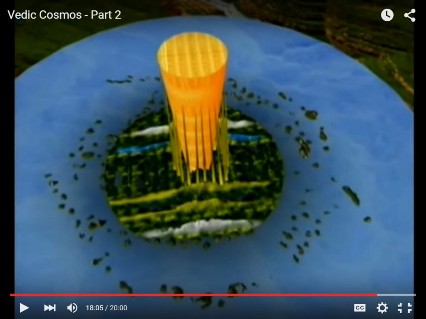

SAILING TO JAMBŪDVĪPA
The Māyāpur Vedic Planetarium and
the Flat Earth According to Śrīmad-Bhāgavatam
By Māyeśvara dāsa -- Part 1 --
(1.0) A New Earth
The Vedic Planetarium in Māyāpur, West Bengal, India (presently well under construction as of November 2015), is an attempt to present the cosmography* [Cosmography is the science that maps the general features of the cosmos or universe, describing both heaven and Earth] of the Universe according to the ancient Vedic literature, primarily the Fifth Canto of Śrīmad- Bhāgavatam as translated and presented by His Divine Grace A. C. Bhaktivedanta Swami Prabhupāda. Śrīla Prabhupāda is the Founder-Ācārya of the International Society for Krishna Consciousness, popularly known as the Hare Krishna society. Śrīmad-Bhāgavatam otherwise known as the Bhāgavata Purāṇa was originally spoken by the great Vedic sage Śrīla Vyāsadeva to his son Śukadeva Goswāmī and is described as being the essence or cream of all Vedic literature and histories sarva-vedetihāsānāṁ sāraṁ (SB 1.3.41). Canto 1, chapter 5, verse 11 of Śrīmad-Bhāgavatam predicts that this literature will bring about a revolution in the impious lives of this world's misdirected civilization (janatāgha-viplavo). The Māyāpur Vedic Planetarium is based on the cosmography of Śrīmad-Bhāgavatam and was one of Śrīla Prabhupāda's main projects to counteract the prevailing materialistic world view of life and the cosmos.


The Śrīmad-Bhāgavatam's depiction of the universe immediately creates a clash of world- views that most people may prefer to avoid, and that includes many of the followers of the Vedas who find it difficult to understand or conceptualize the Śrīmad-Bhāgavatam's depiction of Earth and its relation to the greater universe. We have all grown up with an image of Earth as a rotating ball in space, and we're pretty happy with that. But how did we get that image and conception of a globe into our heads? Is the globe-shaped Earth an authentic image, and is the Earth truly a round planet rotating in space around the sun? Will it come to be, that one of the most earth-shattering events in our life is the discovery of the real nature of Earth itself? What will the Māyāpur Vedic planetarium reveal? To quote from the Book of Revelations, a Christian book of prophecy:
And I saw a new heaven and a new Earth, for the first heaven and the first Earth were passed away (Rev 21.1)
Will the Māyāpur Vedic Planetarium reveal a new looking Earth? Or will it look like the one that The National Aeronautics and Space Administration (NASA) has been presenting ever since the first photographs of Earth taken in 1969, reputedly taken from outer space as the Apollo spacecraft made its way to the moon? This subject can be of interest to all of us; not only because we certainly ought to know the location and shape of the Earth that we live on, but also because the position and shape of the Earth has wider implications in regard to the world views we will adopt, created by either a materialistic or transcendental perspective. We have on our hands a clash of world- views that is truly mind-blowing.
(1.1) The Shape of Earth
What shape is the Earth?
But we know the answer to that already! It's a globe-shaped ball floating in space; right! Right? We've all seen the pictures in books and films, and done the math to prove its round. The sun and moon are round. The other planets are round. Earth is round. What other shape could it be?
Well let's think about that for a moment…
I would to first draw the reader's attention to the depiction of Earth in a video called Vedic Cosmos produced by His Holiness Dānavīr Goswami, a prominent disciple of Śrīla Prabhupāda. I am an admirer of Dānavīr Goswami's scholarship and dedication to Śrīla Prabhupāda. The following paper merely questions a few points of the presentation with the intention of coming to the correct understanding of Earth's position and depiction as described in Vedic texts; indeed I am surprised that Dānavīr Goswami has depicted the Earth as globe-shaped when Śrīmad-Bhāgavatam itself offers no such description. I assume the animation in this video will help formulate the ideas of how the Vedic cosmos will be presented in the Māyāpur Vedic planetarium when it eventually opens. I would like, therefore, to present some counter arguments to Dānavīr Goswami's depiction of a globe-shaped Earth specifically to those involved in preparing the images for the future planetarium. The question of Earth's shape and location, however, is of general interest to all of us, and so I'm presenting the following paper for everyone's interest. According to the Vedic Purāṇas (histories) the continents of our Earth (running from north to south) are an 8,000 mile section of a much greater land area called Bhārata-varṣa; Bhārata-varṣa is altogether a 72,000 mile region of the even greater 800,000 mile circular island of Jambūdvīpa; and Jambūdvīpa itself rests on the cosmic flat plane of Bhū-maṇḍala which has a diameter of 4 billion miles stretching to the shell of the universe. All of this huge land area is populated by various forms of life, including advanced human life. According to NASA we are standing on a rotating ball in empty lifeless space. Which is it? Do we actually have any assurance that the Earth is indeed a globe rotating in space?
Well perhaps we are already so assured and confident in the image of Earth that we've been presented, that to question it is unnecessary, and for anyone to do so, means they must be bordering on the insane. What do you mean by questioning the globe-shaped image of the Earth? Are you crazy? The animation presented in the video Vedic Cosmos is relevant here (at least to those interested in Vedic knowledge) because in that video we see Bhārata-khanda (the Earth) depicted as a globe. Śrīmad-Bhāgavatam however describes Earth as part of a massive island called Jambūdvīpa which lies on the cosmic flat plane of Bhū-maṇḍala. Houston, we have a problem!
(1.2) The Flat Earth
Usage of the term 'flat Earth' does not mean a landscape devoid of highlands and mountains; it is a term used to distinguish the idea of Earth lying on a horizontal plane, from the opposing and most widely accepted idea of Earth being a rotating globe floating in space. The flat Earth idea is usually equated with primitive and pre-scientific ideas. A common expression to equate certain ideas with stupidity is to say, “And people used to think the world was flat.” In most people's minds, a flat Earth conjures up pictures of boats falling off the edge. However, almost all ancient cultures and religions (including the Vedic culture) taught that the world was flat and motionless, and that the sun and moon rotated around the stationary Earth. This system is referred to as the geo-centric system. The opposing idea of Earth as a moving planet rotating the sun began to take hold in the modern era with Copernicus (1473-1543), Galileo (1564- 1642), and Newton (1642-1726). This movement of the Earth around the sun is referred to as the heliocentric system. The word comes from the Greek words helios (sun) kentron (center). Although the heliocentric view of Earth rotating around the sun has always been contended, it was the idea that one the day. Until now…
In just a few years, there has been an almost instant revolution in ideas about the flat Earth with an accompanying explosion of interest in the concept. It has been perhaps one of the most popular internet topics of 2015 and will continue to gain momentum in the coming years. Actual science in the sense of empiric observation, hypothesis, and demonstration has now come back to take the side of a geo-centric and flat Earth model. There have been some truly revolutionary books and documentaries produced which blow apart many of our ideas about the globe-shaped Earth. Interestingly, part of this revolution has involved taking a hard look at the authenticity of the photos and videos from the Apollo moon-landings (1969-1972), as also those subsequent images and videos circulated by NASA that depict the Earth as a rotating ball is space.
It is also interesting timing that this revolution in thinking about the flat Earth is occurring simultaneously with the construction of the Māyāpur Vedic Planetarium whose cosmology clearly describes an expanded flat Earth called Bhū-maṇḍala. Many centuries of Western astronomical propaganda has instilled a false belief in all of us that a flat Earth concept is un-scientific and idiotic; moreover, satellite images of a globe- shaped Earth taken from outer space are presented as conclusive proof that the Earth is round not flat. As will be explained later, however, no such authentic image or video of a globe-shaped Earth rotating on its axis in outer space actually exists. The images we've been presented of the globe-shaped Earth have either been clearly exposed as fake, or as openly admitted by NASA, merely computer generated images of Earth pieced together from composites of photos of land areas taken from so-called 'low orbit.' Basically what you see of the Earth from supposed outer-space is no more what you see of Earth when looking out of an airplane window; namely, some land, sea, and clouds with a flat horizon in all directions. The curved lens camera used on NASA's images is a simple and disingenuous method to create a round or curved shape to the land below. In actuality, the horizon is flat in every direction as can be directly perceived by anyone from a height of 35,000 feet whilst sitting in an airplane. Amateur cameras sent to a height of 120,000 feet also show the same flat horizon and no curvature anywhere. If studied carefully, with respect and without fear and prejudice, the many exposes of NASA's deceptive imagery of Earth, as well as the hundreds and thousands of scientifically presented arguments for the flat Earth model will help support the Śrīmad-Bhāgavatam's depiction of an expanded flat Earth.

(1.3) The Māyā Earth
Vedic cosmography is the science that deals with maps of the universe. For those not familiar with Vedic cosmography, the Sanskrit names and descriptions of the various areas of the universe can be bewildering and one tends to quickly turn off and find something a little easier to discuss and think about. However, the great question of self- realization, “Who am I?” entails a further question, “Where am I?” The world's oldest spiritual literature known as the Vedas, explain that we are eternal spiritual beings now inhabiting an illusory realm of existence called māyā. The term māyā or illusion is applied to the material world, not because the material world doesn't exist, or is a mere figment of the imagination, but because it's not what it seems. The material world creates an illusion for the soul because it covers the knowledge of our own spiritual identity, and covers our perception of the eternal spiritual reality or Kingdom of God. We don't perceive the real world because we have entered a different one—one that creates illusion. Think of going to Disneyland where reality is suspended for a period of time. The Disneyland sets are real, but they create various illusions and fantasy for the viewer.
The material world or māyā is created by God to enable the individual soul to exercise their free will and live an independent existence if they wish to so. Originally inhabitants of the spiritual world, we have somehow or other, become attracted to the Lord's illusory energy. The material world is primarily the realm of self-centered as opposed to God-centered activities. Here we have the license to do things our own way, rather than God's way. As a result we generally just end up getting hopelessly lost and confused about life and its purpose.
On entering the material world, the tiny soul, tempted and bewildered by māyā's distractions, begins to desire and act in materialistic ways; and the result of these desires (kāma) and actions (karma) oblige him to rotate in a cycle of birth and death. Although the soul is eternal without beginning or end, by entering the material nature he makes a pact with material time and becomes subject to the experience of having to take birth, and having to endure death. The various regions in the universe facilitate the various desires and reactions of the living entity as he wanders from one lifetime to another in forgetfulness of his eternal identity. The Vedas give descriptions of the whereabouts, environment, and inhabitants of these various regions in the universe. The various scriptures of the world's religions are meant to gradually remind us of who we are and where we are in relation to God, but the Vedas are very specific in their detailed map of the universe. His Divine Grace A.C. Bhaktivedanta Swami Prabhupāda, referred to the Śrīmad-Bhāgavatam as the post-graduate study of Godhead.
Cosmography forms a large part of the Fifth Canto of Śrīmad-Bhāgavatam and other Vedic texts. This is a subject that the Vedic sages clearly want us all to be informed about. This cosmological knowledge has been transmitted from guru to disciple for thousands of years. In order to make this knowledge known throughout the world, Śrīla Prabhupāda, in the 1970's instructed his disciples to build a planetarium that would inform the people of the world, not only about where the Earth is in its relation to the universe, but also about the astonishing features of Earth itself. After an initial slow start, the construction work of the Māyāpur Vedic Planetarium is now well under way and upon completion will be an astonishing example of the resurgence of Vedic culture in the modern era.
Sometimes discussions on cosmography are neglected or dismissed as too abstract, but this subject is placed in the Śrīmad-Bhāgavatam and other Vedic texts for a reason. The reason is so that the living entities get to learn about the various options and destinations available to them whilst residing in the material world. According to one's karma and desire, the soul will transmigrate from one lifetime to another and be placed in various situations throughout the universe. Knowledge of karma, reincarnation, and cosmography helps one to live in such a way that one can choose favourable destinations rather than be forced to accept unfavourable ones as a result of ignorantly neglecting or violating spiritual laws. This is a world view that obviously takes into account many lifetimes. Detailed explanations of the transmigration of the soul are described throughout the Śrīmad-Bhāgavatam. In the Bhagavad-gītā As It Is, Krishna briefly describes this transmigration of the soul to various regions in the universe:
Those situated in the mode of goodness gradually go upward to the higher planets; those in the mode of passion live on the earthly planets; and those in the abominable mode of ignorance go down to the hellish worlds. (Bhagavad-gītā As It Is, 14.18)
Here Krishna says madhye tiṣṭhanti rājasāḥ. Śrīla Prabhupāda translates the verse as 'those in the mode of passion remain on the Earthly planets.' The word madhye refers to those places in the middle of the universe located along the horizontal circular sphere called Bhū-maṇḍala, a 4 billion diameter area which divides the universe into higher and lower regions. Bhū-maṇḍala is not, therefore, a planet as we presently understand the word. We shall look at this sphere presently to see exactly where our Earth is located in the Vedic cosmos.
Both the celestial and hellish areas within the upper and lower regions of the universe are temporary sojourns as the soul rotates in a cycle of repeated births and deaths over billions of lifetimes:
Those who study the Vedas and drink the soma juice, seeking the heavenly planets, worship Me indirectly. Purified of sinful reactions, they take birth on the pious, heavenly planet of Indra, where they enjoy godly delights.
When they have thus enjoyed vast heavenly sense pleasure and the results of their pious activities are exhausted, they return to this mortal planet again. Thus those who seek sense enjoyment by adhering to the principles of the three Vedas achieve only repeated birth and death. (Bhagavad-gītā As It Is, 9.20-21)
The Vedas also include knowledge of the spiritual world (the Kingdom of God) and the yogic process of how to attain that realm. The idea is that the living entities after experiencing all varieties of existence within the material world can eventually extricate themselves from material illusion and return to their original home. Krishna says:
After attaining Me, the great souls, who are yogīs in devotion, never return to this temporary world, which is full of miseries, because they have attained the highest perfection.
From the highest planet in the material world down to the lowest, all are places of misery wherein repeated birth and death take place. But one who attains to My abode, O son of Kuntī, never takes birth again. (Bhagavad-gītā As It Is, 8.15- 16)
All of these regions are described in detail throughout the Vedic literature to inform the hearer of his options within the material world, as also the types of bodies and environments that he can expect to enjoy or suffer as a result of either applying or neglecting Vedic directives. A further reason for including descriptions of places in the universe in the Vedic literature is so that we get to see the fantastic layout of the universe itself and in this way we can gain a greater appreciation for its designer. The universe is not random; it is brilliantly and beautifully created. The brilliant symmetrical layout of the Bhū-maṇḍala, for example, rules out any possibility of the idea that the universe arose out of nothing and chance.
(1.4) The Earth According to Śrīmad-Bhāgavatam
Śrīmad-Bhāgavatam is a book which is described as being the cream or essence of all Vedic literature sarva-vedetihāsānāṁ sāraṁ (Śrīmad-Bhāgavatam 1.3.41) In other words, it contains the highest and most essential truths of all the Vedic knowledge. In this book, descriptions of the universe are given including the nature of life in the different locations. So where are we in the Vedic universe, and what does Earth look like from the Vedic perspective? Śrīmad-Bhāgavatam describes that our universe is round in shape. The diameter of the universe is calculated to be 4 billion miles which is not so big according to modern calculations. The Vedas do, however, describe that there are innumerable universes and that life is present in multi-various forms throughout these multi-universes. The total number of these collected universes is of inestimable quantity. Despite the inconceivable number of material universes, the entire material world is only a fraction of the spiritual world from which we have fallen.
In the image below we see a simplified depiction of our round universe (bramanda) divided across the middle by a flat plane called Bhū-maṇḍala. Think of cutting a large water melon in half. The flat circular shape of the sliced melon is comparable to the Bhū-maṇḍala.
Bhū-maṇḍala literally translates as 'Earth circle' or 'Earth sphere.' Bhū-maṇḍala has many features including various divisions of land and oceans stretching for millions of miles along its four billion mile diameter. In the above diagram these are indicated as the dvīpas (islands) and oceans. The Śrīmad-Bhāgavatam's fifth canto provides a description of the varieties of geography, life, and spiritual culture of the people situated in these different areas of the greater Earth.
Bhū-maṇḍala divides the universe into higher and lower planetary systems. There are altogether fourteen planetary systems in the universe; six planetary systems are above Bhū-maṇḍala and seven below it. This huge horizontal plane dividing the universe from higher and lower levels is basically what the Vedas describe as Bhūmi (Earth). We shall discuss more of the features of this expanded Earth concept in section 1.7; for now, we want to look particularly where our Earth is situated in Bhū-maṇḍala.
Here we have to introduce some more Sanskrit names which may cause some uncertainty to the reader if one is unfamiliar with the Vedic language and concepts. Think of the Sanskrit place names in the following way. Imagine if it was suddenly announced in the world's media that new continents were discovered beyond the Arctic and contact had been made with humans of a vastly superior culture. One would be obviously fascinated to hear about these new lands and advanced human beings. The first thing we would want to know is the names of these new places and people, and of course, what they look like. Practically the first question we ask anyone is, 'Where do you come from'? So think of Śrīmad-Bhāgavatam as your local media informing you of the startling discovery of new land and new people beyond the Arctic. In fact, the huge scale of these new lands surrounding us makes us appear like ants in comparison.
According to Śrīmad-Bhāgavatam, the places that we know as Earth—America, Europe, Africa, Asia, Australia, etc., are only a small part of a huge land mass to the north of us called Jambūdvīpa; and Jambūdvīpa is the centeral island of Bhū-maṇḍala, the great cosmic sphere that stretches across the universe. Got that? No? OK don't worry! Just bear this is in mind for now: Earth is part of Jambūdvīpa and Jambūdvīpa is in the center of Bhū-maṇḍala.
So what does Jambūdvīpa look like? In the picture below we see the circular island of Jambūdvīpa (800,000 miles wide) with a great golden mountain named Meru in its center. Meru is altogether 800,000 miles in height but only 672,000 miles are visible above the Earth. The remaining 128,000 miles are below the Earth. Jambūdvīpa is surrounded by the salt water ocean coloured blue here in the diagram. This ocean also has a breadth of 800,000 miles and completely surrounds Jambūdvīpa in a huge circle. Past that, we can see another concentric circle representing a further island (dvīpa). A series of these concentric circular islands and oceans continue for millions of miles along this central part of the 4 billion diameter plane of Bhū-maṇḍala. Eventually one comes to the shell of the universe which, as mentioned, is round shaped and encloses everything within it.
Looking from above, Jambūdvīpa appears in the next image with Mount Meru in the center of the circular island:
-
Looking down from above the pole star across the great plane of Bhū-maṇḍala, Jambūdvīpa in the center with its surrounding concentric islands and oceans would look this:
The circles that you see in the diagram are the seven island and seven oceans that stretch for millions of miles along the Bhū-maṇḍala (sapta jaladhayaḥ sapta dvīpa). All of these areas are inhabited by human life. If you are lost already, don't worry, because the point of this paper is not to make you an expert in Vedic cosmography, but rather to focus on an explanation of the position and shape of the Earth we live on (according to Śrīmad-Bhāgavatam). At this point we have simply learned that Earth is a small part of a huge circular island called Jambūdvīpa, and that Jambūdvīpa is just one of many tracts of land that lie on the great plane called Bhū-maṇḍala. If we take a closer look at Jambūdvīpa, we can see its division into nine regions:
The above diagram shows an aerial view of the circular island of Jambūdvīpa with Bhārata-varṣa (where we are) in the south. OK, so now we've introduced another Sanskrit place name: Bhārata-varṣa. This is very important because it is the Sanskrit name of our own locality. Basically the inhabitants of the rest of the Vedic universe refer to our Earth as part of Bhārata-varṣa which (as the diagram illustrates) is one of the nine varṣas (divisions) of Jambūdvīpa. Should you ever meet anyone from Jambūdvīpa, you can tell them you're from Bhārata-varṣa and they'll understand you're from the place we call Earth.
Actually, Bhārata-varṣa has a total length of 72,000 miles and like Jambūdvīpa itself is also divided into nine regions of which our Earth is only one part. We will discuss these divisions of Bhārata-varṣa later in section 1.6. But let us go back now to our news report from Śrīmad-Bhāgavatam TV about the wonderful discovery of other land and other people in the vicinity of Earth. What have we learnt so far? Basically, we have learned that the Earth is not in fact a round globe rotating in space, but is part of an expanded land area called the Bhū-maṇḍala. Earth is located in an area called Bhārata-varṣa which is a division of Jambūdvīpa, the central island of Bhū-maṇḍala. In practical terms we have just discovered that we are part of an 800,000 mile island inhabited by other humans which is only one of many such islands stretching across the center of the universe.
OK back to Jambūdvīpa. Looking at the previous diagram above, we can see that to the north of Bhārata-varṣa, one proceeds through Kimpuruṣa-varṣa, then Hari-varṣa before arriving at Mount Meru itself which stands in the center of Jambūdvīpa in Ilāvṛta- varṣa. The black lines that cross the image represent huge mountain ranges that divide one varṣa from another. In the Mārkeṇḍeya Purāṇa, Bhārata-varṣa is described as bow- shaped; the south, east and west form the bow shape (the rounded coastal area), and the Himalaya Mountain forms the bow's string in the north. This Himalaya is not the one we know in India. This Himalaya rises to a height of 80,000 miles high. This Himalaya mountain range separates Bhārata-varṣa from Kimpuruṣa-varṣa. The mountain ranges dividing Jambūdvīpa are more clearly illustrated below with Bhārata- varṣa shown here in the bottom right area of the picture:
The above picture shows Jambūdvīpa with the golden Mount Meru in the center. The rows of mountains around its base rise to a height of 80,000 miles. These huge mountain ranges divide Jambūdvīpa into nine varṣas (regions). Earth is one of nine islands situated in the area called Bhārata-varṣa.
Worship of Krishna takes place among the inhabitants of all these varṣas of Jambūdvīpa as described in the Gopāla- tāpanī Upaniṣad:
mathurā-maṇḍale yas tu / jambūdvīpe sthito 'tha vā
yo 'rcayet pratimāṁ prati / sa me priyataro bhuvi
"One who worships Me in My Deity form while living in the district of Mathurā or, indeed, anywhere in Jambūdvīpa, becomes most dear to Me in this world." (Gopāla-tāpanī Upaniṣad, Uttara 47)
A brief description of the environment, people, and spiritual culture of the residents of Jambūdvīpa, including Bhārata-varṣa, is given in the Fifth Canto of Śrīmad-Bhāgavatam, chapters sixteen to nineteen. A description of further inhabited islands surrounding Jambūdvīpa is given in chapter twenty. A description of further features of Bhū- maṇḍala as well as a description of the planets and stars is given in chapters twenty- one and twenty-two. A description of the seven planetary systems below Bhū-maṇḍala is given in chapters twenty-four and twenty-five. The different planetary systems of the universe (fourteen in all) are not to be construed as planets as we generally understand them, but are more like vast expanses or levels that are situated above and below the Earth (or plane of Bhū-maṇḍala), and which facilitate the different desires and karmas of the living entities within the material world. All of these places have diverse environments and are inhabited by various forms of life. Śrīmad-Bhāgavatam particularly describes the varieties of spiritual culture (or lack of it) throughout these regions. A description of the hells is also given in chapter twenty-six. These various descriptions of life and situations throughout the universe educate the living entity within the material world about his choice of environment as well as reminding him of the karmic results that follow as a result of applying or neglecting directives from the Vedic literature.
The essential message of Śrīmad-Bhāgavatam, however, is to persuade the living entities to give up their fascination and attachment to these temporary situations within the material world and to work towards re-establishing their eternal relationship with Krishna through the process of bhakti-yoga. By this process one can get liberation from the cycle of repeated birth and death, and ultimately return back to the Kingdom of God, the original home of the soul. To this end the Śrīmad-Bhāgavatam's Fifth Canto which contains most of the teachings on cosmography, also contains the teachings of Jaḍa Bharata a great Vedic sage who teaches strongly about the many illusions that capture the mind and senses of the living entities within the material world.
(1.5) The Earth of Śrīmad-Bhāgavatam is Not a Globe
Now, to come to the main point of this paper which is to raise a doubt about the depiction of Earth presented in the Vedic Cosmos video by Dānavīr Goswami. If we take a look at the Vedic Cosmos video we will see Earth floating like a ball in the salt water ocean that surrounds Jambūdvīpa:
Referring to Earth as Bhārata-kanda (the Sanskrit nomenclature or name used here for Earth) the video states that Earth is one of the nine islands lying off the shore of Jambūdvīpa, and that these islands known as Bhārata-varṣa were created by the sons of Sagara. We wish to question this detail below, but accepting for now that it is true, why is it that Bhārata-kanda (Earth) is depicted as a globe floating on water? If Bhārata- kanda is formed of the same topography as the rest of Bhārata-varṣa (simply being one of the parts of the original landscape that was later formed into nine separate islands) then how did it suddenly become a perfect globe, looking spectacularly incongruous (out of place and ill-fitting) with the surrounding terrain of Jambūdvīpa? The animation accurately depicts Jambūdvīpa as a normal-looking island, but then goes on to depict our Earth (which is simply a region of the same island) as somehow miraculously forming the shape of a globe.
Imagine, for example, if sea levels began to rise around America causing new islands to form around the high land that was not submerged. The new islands would still look very much like the rest of America; they would not start taking the appearance of a perfect ball. In the Vedic Cosmos animation we hear an explanation of how nine islands are formed in Bhārata-varṣa, but curiously, only one of them is globe-shaped. Why do the other islands depicted in the animation not also take the form of globes floating in the water? They are accurately depicted as normal looking islands; not planets. The depiction of Earth as a globe floating on water is at variance with what is actually being described, namely the formation of smaller islands or regions from the larger island of Jambūdvīpa. The dissimilarity of the globe-shaped Earth with the other islands is striking, and the reasons stated for depicting it in this way are conjectures based on interpolation of certain Sanskrit words (see below). Where is there any mention in any Vedic scripture of this particular tract of Bhārata-varṣa forming into a globe-shaped ball? The extraordinary creation of one perfectly round-shaped globe formed out of an ordinary island such as Jambūdvīpa would surely warrant a mention by Śukadeva Goswāmī the speaker of Śrīmad-Bhāgavatam. Imagine if an 8,000 high pyramid-shaped island/planet was formed instead of a globe-shaped one; would such a fantastic design not be mentioned by a geographer, especially if the oceans and people on all of its sloping sides managed to remain as if horizontal and without sliding off? A perfect globe-shaped ball floating on water is no less of an astonishing creation demanding explanations of gravity, etc., that would surely be pointed out by Śukadeva Goswāmī. The fact is there is no mention of such a creation taking place anywhere. One is left to assume the obvious, that Earths islands or continents are lying flat like the other areas of Jambūdvīpa. Let us put aside for a moment what we assume the Earth to look like, and just take in the actual description of Bhārata-varṣa as part of Jambūdvīpa. If we present the Earth as a globe it means we haven't represented (re-presented) the actual description given by Śukadeva Goswāmī. In any case, the depiction of the Earth as a globe cannot stand the various scientific observations that have been made which clearly demonstrate that there is no observable or measurable curvature on the Earth (see section 2.4).
An important point to note, however, is that the video Vedic Cosmos correctly shows Earth's relation to Jambūdvīpa. The video's animation of a globe-shaped Earth floating on water and surrounded by other land features is, of course, a shock to the mind accustomed to perceive images of the Earth as a lonely globe floating in dark, empty space. However, the idea presented in the above images from Vedic Cosmos that there are other land areas within the vicinity of our Earth's continents and oceans is not something that any of us can personally confirm or deny. Which one of us, for example, has personally gone into outer space to confirm the actual position of Earth as a rotating globe in space? And which one of us has personally crossed the Arctic and Antarctica regions to see if there is actually more land to be discovered? All of us rely on images of Earth from agencies such as NASA. In section 2.2 we call these official images into question. Although most people would not feel any need to call these images and accounts into question, a follower of Śrīmad-Bhāgavatam has to call these images into question because according to Śrīmad-Bhāgavatam there are indeed other lands and other humans in the vicinity of the place we call Earth. They rest on the same salt water oceans as our own. Theoretically, if we set a northern course, we could sail to Jambūdvīpa on the same ocean (see section 2.6). The recent expose of NASA's so-called images of Earth by members of the flat-Earth society not only uncovers the greatest hoax in history, but opens up a whole new understanding and appreciation of Śrīmad- Bhāgavatam's expanded Earth concept.
The previous image from Vedic Cosmos of the globe-shaped Earth floating on Jambūdvīpa's salt water ocean would perhaps appear more credible and acceptable if it simply depicted the continents of Earth as lying flat on the salt water ocean, not floating like a ball on top of it. The correct depiction of Earth lying flat will resonate with the soul's innate comprehension and intuition of the truth of Krishna's creation. Such a depiction would actually correspond with our perception of reality; for as we fly or sail over land and oceans we find Earth to be perfectly flat in all directions. There is no observable or measurable curvature of the Earth anywhere (see section 2.4).
It appears from the Vedic Cosmos video that the actual description of Bhārata-varṣa given in Śrīmad-Bhāgavatam has been interpolated to fit a pre-conceived and ill- conceived notion of the Earth according to NASA – an image that has been indelibly marked in our minds as the authentic image of Earth's shape. I personally do not accept the images of a globe-shaped Earth rotating in space as authentic (see section 2.2) but assuming for a moment that they are true, in the images of Earth provided by NASA, we don't anywhere see a ball-shaped Earth floating on a cosmic size ocean. Rather, we see a ball-shaped Earth floating in dark empty space. How does Dānavīr Goswami hope to explain the disparity? What is the motivation behind this depiction which clearly departs both from Śrīmad-Bhāgavatam's description, and from NASA itself?
Here, by the way, we have a spectacular clash of world views which is not a debate for the faint-hearted. If NASA's claim to be photographing Earth from outer space is authentic, then according to the followers of Śrīmad-Bhāgavatam they would show other regions of land in the vicinity of Earth's continents - these being the eight other regions of Bhārata-varṣa that stretch over an area of 72,000 miles on the same salt water ocean as our own. From an even further distance in space they would see the huge circular island of Jambūdvīpa itself, and looking even further from outer space they would see the huge tracts of land forming the other concentric islands surrounding the central island of Jambūdvīpa. It has to be one or the other. Either NASA is lying, cheating, and deceiving people with their images of a globe Earth rotating in dark empty space, or the Śrīmad-Bhāgavatam is a nice fairy story to entertain its Vedic followers with nothing more than fantastic myths and legends.
The description of Bhārata-varṣa is given in the 5th Canto of Śrīmad-Bhāgavatam, in sections of the Mahābhārata, as well as in other Purāṇas (Vedic history). Bhārata-varṣa has a total land area of 72,000 miles and sits in the southern region of the larger area of Jambūdvīpa (800,000 miles). Bhārata-varṣa itself is further divided into nine sections of which our Earth is one. This is described in various Purāṇas such as Viṣṇu Purāṇa, Brahmāṇḍa Purāṇa, and Mārkeṇḍeya Purāṇa. In the Mārkeṇḍeya Purāṇa it is stated:
Kraushtuki spoke. Adorable Sir! Thou hast fully described this Jambudvipa…Therefore tell me, O brahman, about this Bharata in detail, and what are its divisions, and how many they are, and what is its constitution accurately; it is the country, and what are the provinces and the mountains in it, O brahman?
Markandeya spoke. Hear from me the nine divisions of this country Bharata they must be known as extending to the ocean, but as being mutually inaccessible. They are Indra-dvipa, Kaserumat, Tamra-varna, Gabhastimat, and Naga-dvipa, Saumya, Gandharva and Varuna; and this is the ninth dvipa among them, and it is surrounded by the sea. This dvipa is a thousand yojanas from south to north.
Śrīla Prabhupāda's quotes from the Siddhānta-śiromaṇi to confirm the existence of these divisions of Bhārata-varṣa:
In the Siddhānta-śiromaṇi, Chapter One (Golādhyāya), in the Bhuvana-kośa section, the nine khaṇḍas are mentioned as follows:
‚Within Bhārata-varṣa, there are nine khaṇḍas. They are known as (1) Aindra, (2) Kaśeru, (3) Tāmraparṇa, (4) Gabhastimat, (5) Kumārikā, (6) Nāga, (7) Saumya, (8) Vāruṇa and (9) Gāndharva.‛ (Śrī Caitanya-caritāmṛta, Antya-līlā, 2.10)
In the above quote from the Mārkeṇḍeya Purāṇa, Mārkeṇḍeya Ṛṣi says that the region of Bhārata-varṣa which we know as Earth is 8,000 miles from north to south and is completely surrounded by the sea. Mārkeṇḍeya Ṛṣi's measurement of the Earth's diameter is very close to the modern calculation of approximately 7,920 miles, and his depiction of the Earth being completely surrounded by water is, of course, exactly how Earth can be experienced by any of us living here. For the vast majority of us who have not yet taken a ride on a rocket ship or a UFO to confirm by personal experience whether the Earth is round or flat, we can at least experience by direct perception that wherever we go by land, sea, or air, the horizon below us is always flat.
So according to Mārkeṇḍeya Purāṇa and Viṣṇu Purāṇa, as well as other Purāṇas, Bhārata- varṣa has a total area of 72,000 miles and is divided into nine areas of which our Earth is but one part measuring 8,000 miles. This means that to the east and west of Earth's continents there are more land areas belonging to Bhārata-varṣa; and to the north of Earth's continents is the next varṣa of Jambūdvīpa known as Kimpuruṣa-varṣa. Our Earth is 1,000 yojanas or 8,000 miles from south to north. Theoretically, therefore, when we get to the northern part of our Earth, we are almost in reach of Jambūdvīpa itself. If we could reach Jambūdvīpa and kept going north (on a flat plane) we would eventually reach Mount Meru. According to Śrīmad-Bhāgavatam we are in fact part of Jambūdvīpa, but are just separated by water. The Śrīmad-Bhāgavatam and Mahābhārata states that only 5,000 years ago, the Pāṇḍavas were ruling this entire area from their capital in present day India (see section 1.8 below). Now we no longer have access to this area.
We are also separated from the other areas of Bhārata-varṣa. According to the above description by Mārkeṇḍeya Ṛṣi, there are eight other land areas (covering an area of 72,000 miles) somewhere in the vicinity of Earth's oceans. Although 'mutually inaccessible' they are not far away. Of course this only makes sense on a flat Earth model with expanded planes. It makes no sense from the perspective of a globe. We shall explain with examples later why this globe image is actually an artificial creation from the special effects department of NASA (see section 2.2). We live on a flat Earth, and there is a lot more to be discovered or rather re-discovered. This is the version of the Purāṇas and the one most consistent with the science that proves the Earth is on an expanded flat plane, not a rotating ball in space.
Mārkeṇḍeya Ṛṣi says the islands are mutually inaccessible. I'm not sure exactly how to take this because the distances are not inconceivably distant by modern transportation such as ships and airplanes. A 72,000 region roughly divided into nine parts would give a rough estimation of 8,000 miles for each region. Modern airplanes and ships are easily able to cross these distances. Why these areas are considered mutually inaccessible is not explained. Certainly, only 5,000 years ago, the Pāṇḍavas were governing not only all of Bhārata-varṣa, but also all of Jambūdvīpa which is an area of 800,000 miles. This would indicate that the islands are not so much mutually inaccessible as extremely difficult to access—at least for our present generation. We shall discuss these points later and offer some reasons for why we are now separated from these other areas of Jambūdvīpa.
In any case, from these descriptions we are not hearing anything that remotely resembles a globe-shaped planet. Jambūdvīpa is described as being like a huge circular continent surrounded by water. This continent is divided into nine regions called varṣas of which Bhārata-varṣa is one. Earth itself is just one of nine further divisions of Bhārata-varṣa. Parts of Bhārata-varṣa may, indeed, have been separated into islands as depicted in the video, but there is absolutely no reference anywhere to Earth being a ball-shaped planet floating on water. Earth is as we find it – a number of continents lying horizontal and surrounded by water. As described in Śrīmad-Bhāgavatam, if one proceeds north from Bhārata-varṣa, one passes Kimpuruṣa-varṣa and Hari-varṣa before arriving at Meru itself which is at the center of Jambūdvīpa. Think of going, for example, from the south of Africa to the north of Europe, or going from the west of Europe into Eastern Asia; this is simply one land mass divided into continents and surrounded by water. Similarly, Jambūdvīpa is one huge circular island surrounded by water and Bhārata-varṣa is one of these regions of Jambūdvīpa. Bhārata-varṣa is on a horizontal surface all the way. Is the depiction of Earth as a globe-shaped ball, therefore, not a case of imposing our modern conception of the globe onto a text that describes it accurately (in my opinion) as part of an island surrounded by the vast salt water ocean?
If, the information is indeed factual, that Bhārata-varṣa has been divided into nine islands, and that Earth is one of these nine islands lying off the south coast of greater Jambūdvīpa, then it will obviously have the same topography and character as the other islands, all of them resting on the flat plane of Bhū-maṇḍala. Where did the ball idea come from? It doesn't make any sense at all! Certainly it is not what the text is describing. There is no description anywhere in Vedic texts that Earth has a whole set of different rules from the rest of Bhārata-varṣa such as the law of gravity etc., that would be required to support a globe-shaped conception.
Regarding the Earth being a round globe like shape, His Holiness Dānavīr Goswami goes onto to say:
Sometimes Vedic cosmology is misconstrued as portraying the Earth to be a flat disc. This flat Earth misconception arises partly due to our inability to understand Vedic nomenclature. A single object may be referred to by several names and a single name may refer to several objects. For example, the term Earth may be used to describe at least 6 different aspects of Vedic cosmology. The Earth we live in is indeed a globe as explained by the word parimaṇḍala meaning spherical used in the Mahābhārata text. The flat disc refers to the greater planetary system of Bhū-maṇḍala.
Unfortunately the Sanskrit verse in which the word parimaṇḍala is used is not included in the Video's dialogue. One needs to see the specific verse reference and context in which the word parimaṇḍala is used to describe Bhārata-kanda. The word parimaṇḍala can just as often mean round or circular, and it is not a definitive evidence for the Earth being spherical. Something can be circular on a flat surface such as a round-about on a motorway. The devotees of Krishna speak of Vraja-maṇḍala parikrama, for example, meaning to walk in a rotating or circumambulating fashion around the maṇḍala (circle) of Vraja (a pilgrimage place in India sacred to followers of Krishna). There is no mention in Śrīmad-Bhāgavatam of Bhārata-varṣa being a globe-shaped ball floating on water, a shape that would make it completely incongruous with its surrounding environment. The translation and application of the Sanskrit word parimaṇḍala has to be sensitive and appropriate to the thing being described. The Purāṇas describe Bhārata-varṣa as being 72,000 miles in length and divided into nine regions (or islands?). It forms one part of the huge circular island of Jambūdvīpa which lies at the center of the flat circular plane of Bhū-maṇḍala. There is no mention of any part of it resembling anything like a globe floating on the salt water ocean. Bhārata-varṣa sits next to Hari- varṣa and Kimpuruṣa-varṣa, just as Europe sits next to Asia. One can cross from the same land mass of Bhārata-varṣa into Kimpuruṣa-varṣa and northward to Mount Meru itself. Only 5,000 years ago this entire land was governed by the Pāṇḍavas from their capital in India. Bhārata-varṣa is not described as a globe. It is on a horizontal plane. It seems that undue license has been taken here to interpret one word in such a way, that Bhārata-varṣa is made to conform to a preconceived idea of what the Earth should like, rather than how Śrīmad-Bhāgavatam describes it as actually looking like.
If we look at the context again, the word parimaṇḍala may perhaps be referring to either Jambūdvīpa itself, which is described as an island being circular in shape, or to the greater Earth disc known as Bhū-maṇḍala itself; indeed the use of the word pare (great) would suggest the larger Bhū-maṇḍala. Again the context would have to be looked at. Dānavīr Goswami has also quoted the Sanskrit word Sudarśana as a reference to Earth being round. Sudarśana refers to the round shape of Krishna's disc weapon. However, the Bhīṣma-parva section of Mahābhārata (sections V and VI) wherein Sañjaya describes to King Dhṛtarāṣṭra about the Vedic cosmography, clearly and unequivocally uses the word Sudarśana to describe the circular shape of Jambūdvīpa, not Earth itself. Misappropriation of the word Sudarśana to make Earth appear as a globe is a careless interpolation in an otherwise congratulatory attempt to depict Earth's position in the Vedic Cosmos. To his credit, Dānavīr Goswami has correctly positioned Earth in its relation to Jambūdvīpa; the continents of the Earth just have to be depicted as lying flat on the salt water ocean as we indeed experience it.
In any case, if one insists on interpreting parimaṇḍala or any other Sanskrit word to mean that the Earth is ball-shaped, one faces a massive disparity between the presentation of the Earth as globe, and the actual description given in Śrīmad- Bhāgavatam and other Purāṇas which depict it as a small region surrounded by water and forming one small part of the larger island of Jambūdvīpa. We need to take the description of Bhārata-varṣa as it is; not impose our pre-conceived idea.
If the word parimaṇḍala is actually attributable to Earth, it may actually confirm the flat Earth map which depicts the continents of Earth surrounded by the Antarctica wall which encloses the land mass in a circular ring of ice. Indeed any of the Sanskrit nomenclature which may describe Earth as circular could possibly be referring to this Antarctic belt. The picture below shows an aerial view of the most popular flat Earth map with the enclosing Antarctica wall:
The flat Earth map with enclosing circular ice wall of Antarctica. This map does not indicate the places that according to Śrīmad-Bhāgavatam would lie beyond the ice regions.
The ice regions could indeed possibly present some type of physical barrier that prevents us from entering Jambūdvīpa. Mārkeṇḍeya Ṛṣi says that the regions of Bhārata-varṣa are mutually inaccessible, so obviously some kind of barrier exists to prevent us going further. It is true also that from whatever part of the world one sails in a northern or southern direction, one eventually runs into an impassable wall of ice.
A telling map of the world from NASA actually shows ice regions running the length of the world in both northern and southern regions:
In the globe-Earth model Antarctica is an ice continent which covers the bottom of the globe from 78 degrees South latitude to 90 and is therefore not more than 12,000 miles in circumference. However, in the flat-Earth model, Antarctica becomes a huge circle of ice completely surrounding the other continents. Eric Dubay writes of the inconsistencies found in exploration of the Antarctica:
Many early explorers including Captian Cook and James Clark Ross, however, in attempting Antarctic circumnavigation took 3 to 4 years and clocked 50-60,000 miles around. The British ship Challenger also made an indirect but complete circumnavigation of Antarctica traversing 69,000 miles. This is entirely inconsistent with the ball model. (Eric Dubay 200 Proofs Earth is not a Spinning Ball)
Speculation abounds as to what lies beyond the Antarctica but according to Śrīmad- Bhāgavatam beyond the polar ice plateaus one would find the other regions of Bhārata- varṣa as well as the mainland of Jambūdvīpa itself. For this reason, I'm not completely confident with the existing flat-Earth map because according to Śrīmad-Bhāgavatam to the north of our continents and oceans one would eventually come to the 80,000 mile high Himalayan Mountain that separates Bhārata-varṣa from Kimpuruṣa-varṣa, two of the three varṣas on the southern side of Jambūdvīpa. From India the Pāṇḍavas went north (possibly crossing Russia) and somehow entered Jambūdvīpa. This northern route was also the course taken by Olaf Jensen who accidentally sailed into an enchanted world reminiscent of descriptions of Jambūdvīpa given in Śrīmad- Bhāgavatam. The people he met even spoke a dialect of Sanskrit. This adventure is retold in the book The Smokey God by Willis George Emerson (1908). On the flat-Earth map, however, if one heads north from India, one crosses Russia and comes to the Arctic. But after the Arctic one only finds North America, not Jambūdvīpa. So something appears to be wrong with this flat-Earth map, at least from Śrīmad- Bhāgavatam's description. In another sense, the layout of the continents on the flat-Earth map seems correct when we come to consider the strange world of flight routes (see section 2.3). I have as yet to find a solution to this disparity.
In any case, according to Śrīmad-Bhāgavatam if one kept going north from India, the compass would actually keep pointing north even after coming to the so-called North Pole. The compass would keep pointing north because that is the direction of Mount Meru. Meru (not the so-called North Pole) is the central point in the greater Earth (or Bhū-maṇḍala) from which all directions are measured. Meru is directly north of Bhārata-varṣa. Previously the Pāṇḍavas were governing all of Jambūdvīpa from their capital in India (see below section 1.8) so access was possible at that point, but about 5,000 years ago we entered into the Kali-yuga period (the age of fighting and hypocrisy) and our particular place in Bhārata-varṣa became isolated from the mainland of Jambūdvīpa. It is mentioned in various Purāṇas that the yugas (four repeating cycles of time that bring about variations in people's mind, behaviour, and environment) only affect Bhārata-varṣa and not the other varṣas of Jambūdvīpa were pious people live happily enjoying the results of their previous karma. For that reason we are put into a kind of quarantine, and the formation of the Antarctica circle may be part of the physical barrier which prevents our entrance into Jambūdvīpa.
The problem for most of us in conceptualizing what Earth looks like is because we have been convinced that we are on NASA's ball in space. If we are to believe Śrīmad- Bhāgavatam we are actually not that far from our neighbours on Bhārata-varṣa, and from our more enlightened neighbours on Jambūdvīpa. In reality we are only a few thousand miles away. We are surrounded by the same salt water ocean. Think about that; the salt water ocean surrounding Jambūdvīpa is the same salt water ocean that surrounds our own continents. This is because we are actually part of Jambūdvīpa, but just separated by ocean. The salt water ocean is described in Śrīmad-Bhāgavatam as being the same breadth as Jambūdvīpa, that is, 800,000 miles across. The salt water ocean completely surrounds Jambūdvīpa in a great circle. From our Earth, if we go north we would reach Jambūdvīpa in a relatively short distance. But going in a southerly direction would mean continuing for another 800,000 miles on the salt water ocean until one reaches Plakṣadvīpa which is the next concentric island surrounding Jambūdvīpa on the plane of Bhū-maṇḍala. In the Mahābhārata Sañjaya mentions that there are also various kingdoms scattered throughout this huge salt water ocean, however, the prominent land features of the Bhū-maṇḍala are commonly acknowledged as the sapta-dvīpa or seven islands and their surrounding oceans. These seven circles of various islands and oceans continue for millions of miles along the Bhū- maṇḍala. A description of the geography and spiritual life of the people living in these areas is described in the Fifth Canto of Śrīmad-Bhāgavatam and other Vedic texts.
In any case, somehow, we've been somehow separated from the mainland of Jambūdvīpa. The possibility of rediscovering it exists, and it doesn't involve taking spaceships to other Earth-like planets that are similarly floating in space. We do not need rocket ships to find the other regions of Jambūdvīpa because according to Śrīmad- Bhāgavatam we are not on a rotating globe-shaped planet at all. We are already standing on part of the flat 800,000 mile circular island of Jambūdvīpa, and are literally only a few thousand miles away on the same stretch of salt water ocean that surrounds our continents from the mainland of Jambūdvīpa. We have difficultly to conceive of this because of the ball-shaped Earth concept.
(1.6) The Divisions of Bhārata-varṣa
Just as Jambūdvīpa is divided into nine varshas, the Mārkeṇḍeya Purāṇa, Viṣṇu Purāṇa, etc., also describe Bhārata-varṣa itself as being divided into nine regions. Being unable to read Devanāgarī, I cannot find a clear English translation in which the divisions are described as being either kandas (regions) or dvīpas (islands). If some knowledgeable scholar can provide references for this, it would be very helpful. In my own reading through the different English translations of the Purāṇas and other source material which describe Bhārata-varṣa, the language and translations available are contradictory or ambiguous. Sometimes Bhārata-varṣa is divided into kandas (regions) and sometimes dvīpas (islands)? Earth, however, is specifically mentioned as being completely surrounded by water which puts it in the category of dvīpa. In the Vedic Cosmos video, all nine regions of Bhārata-varṣa have been depicted as separate islands, and this depiction seems to be confirmed by a few texts from Śrīmad-Bhāgavatam:
Of the one hundred sons of Lord Ṛṣabhadeva, the eldest, Bharata, was completely devoted to Lord Nārāyaṇa. It is because of Bharata's fame that this planet is now celebrated as the great Bhārata-varṣa. (Śrīmad-Bhāgavatam 11.2.17)
Nine of the remaining sons of Ṛṣabhadeva became the rulers of the nine islands [nava-dvīpa] of Bhārata-varṣa, and they exercised complete sovereignty over this planet. Eighty-one sons became twice-born brāhmaṇas and helped initiate the Vedic path of fruitive sacrifices [karma-kāṇḍa]. (Śrīmad-Bhāgavatam 11.2.19)
Here the word nava-dvīpa (nine islands) is used to describe Bhārata-varṣa, although in the commentary they are strangely mentioned as the nine varṣas of Jambūdvīpa. In any case, very little description is given elsewhere about these other regions or islands of Bhārata-varṣa.
In the video Vedic Cosmos we see Earth positioned at the southern part of Jambūdvīpa situated in the salt water ocean alongside the other islands of Bhārata-varṣa. In his commentary, HH Dānavīr Goswami explains:
Bharata kanda is one of the nine islands of the originally bow-shaped Bhārata- varṣa which was divided by the sons of Sagara. Being completely surrounded by water the islands are mutually unreachable.
The formation of certain islands surrounding Jambūdvīpa by the sons of Sagara is indeed described in Śrīmad-Bhāgavatam, but it is not evident from the verse that these islands are actually referring to a division of Bhārata-varṣa into islands:
Śrī Śukadeva Gosvāmī said: My dear King, in the opinion of some learned scholars, eight smaller islands surround Jambūdvīpa. When the sons of Mahārāja Sagara were searching all over the world for their lost horse, they dug up the earth, and in this way eight adjoining islands came into existence. The names of these islands are Svarṇaprastha, Candraśukla, Āvartana, Ramaṇaka, Mandara-hariṇa, Pāñcajanya, Siṁhala and Laṅkā. (Śrīmad-Bhāgavatam 5.19.29-30)
I would like to point out in passing, that here it mentions eight islands. It does not appear in the verse that these islands refer to the nine divisions of Bhārata-varṣa. The list of names of these islands is also different from the names given in the Viṣṇu Purāṇa, Mārkeṇḍeya Purāṇa, etc., to indicate the nine regions of Bhārata-varṣa; again indicating that we are talking about two different sets of places. At least in this verse, it seems that Śukadeva Goswāmī is just incidentally mentioning the existence of another eight smaller islands that surround Jambūdvīpa. The islands in question could be anywhere around the huge coastal area of Jambūdvīpa. There is actually one early illustration from Śrīmad-Bhāgavatam which depicts them as such, and other renditions of the story of Sagara's sons creating these islands have placed the islands surrounding Jambūdvīpa, not in Bhārata-varṣa. I'm not trying to contradict HH Dānavīr Goswami here, but clarification and specific references would be helpful. This is in one sense a minor point in the discussion and I only include it for those Sanskrit scholars involved in the final depiction of Bhārata-varṣa to be displayed in the Vedic planetarium.
In any case, whether divided into varṣas (regions) or dvīpas (islands) the whole area of Bhārata-varṣa lies within the bow-shaped portion of southern Jambūdvīpa. We know, therefore, exactly where Earth is, but not exactly what we look like in relation to the other parts of Bhārata-varṣa. One thing we do know for certain, however, is that our Earth is measured as 1,000 yojanas or 8,000 miles from north to south; and going just north from Bhārata-varṣa we come to our neighbours in Kimpuruṣa-varṣa. We are not actually so far away from the rest of Jambūdvīpa. The idea that we are neighbours to huge tracts of land with billions more people living on the mainland of Jambūdvīpa, is a revolutionary concept that cannot be reconciled with the idea that we are alone on a planet rotating in empty space. This understanding requires a new level of Krishna consciousness.
In the narration HH Dānavīr Goswami says that:
These islands [referring to Earth and its neighbouring islands] are surrounded by water that makes them mutually inaccessible.
If indeed it is the entire region of Bhārata-varṣa that has been divided into nine islands, the actual distance between the islands would still not be so great as to make them inaccessible to each other. Bhārata-varṣa is described as being 72,000 miles in length. If we divide that by 9 we have a surface area of roughly eight thousand miles for each island. Interestingly, the diameter of Earth is estimated at approximately 7,920 miles by modern calculations. The distance to the shore of Jambūdvīpa, therefore, is relatively small and quite possible using our present modes of transport. Our continents are lying on the same salt water which theoretically would lead us to the shore of Jambūdvīpa if we just kept flying or sailing. That's of course if we are on a flat plane and not a globe as NASA presents. As yet, the Antarctica creates an impasse by either sea or air, and no complete north-south circumnavigation has ever taken place. The mystery surrounding the true nature of Antarctica and the denial of access to independent explorers by the world Antarctic Treaty of 1959 has been the focus of much flat Earth research. One thing is for sure—at least according to Śrīmad-Bhāgavatam and Mahābhārata—what we know today as present day India once had connections to the greater Jambūdvīpa, indeed only 5,000 years ago, the entire 800,000 mile area of Jambūdvīpa was governed by Maharaja Yudhiṣṭhira and later Mahārāja Parīkṣit (see sections 1.8 and 1.9). So it would seem that the islands of Bhārata-varṣa are not so much mutually inaccessible, but rather extremely difficult to access.
This raises an interesting question: Are we still connected to Jambūdvīpa, or entirely cut off and separated by water? It may be that we are still possibly connected to Jambūdvīpa and access is only permitted to spiritually qualified people. The lack of perception and access to Jambūdvīpa would involve some kind of illusion or diversion by higher forces that prevents us from seeing and entering the crossing. This is not an inconceivable proposition. If master magicians such as David Copperfield can disappear the Statue of liberty, it is well within the power of great controllers of the universe (devas) to prevent our perception of Jambūdvīpa. If we are indeed entirely separated by water, the mainland of Jambūdvīpa could not in any case be an inconceivable distance from us, and again some kind of illusion or physical barrier may be employed to prevent entry. Certainly, the globe Earth concept has us all thinking that we are just going around in a small circle. Śrīla Prabhupāda mentions in a conversation with Tamāla Kṛṣṇa Goswami (see section 2.5 below) that can go further east and west, but we are prevented from further travel by higher forces. We should again bear in mind that according to Mārkeṇḍeya Purāṇa, the yuga cycles only affect Bhārata-varṣa, (not the other varṣas of Jambūdvīpa). Due to it being Kali-yuga here in Bhārata-varṣa (the age of quarrel and hypocrisy) it makes sense that we have been put into a kind of quarantine and isolated from the rest of Jambūdvīpa.
(1.7) The Earth Disc (Bhū-maṇḍala) and the Vedic Empire
The main speaker of Śrīmad-Bhāgavatam, Śukadeva Goswāmī, narrates of events five thousand years ago when Earth (bhūmir) was overburdened by demonic beings in the guise of Kings. These apocalyptical events precipitated the appearance of Lord Krishna who incarnated to protect the saintly devotees of God, destroy the demons, and re- establish dharma. It should be understood, however, that when Śukadeva Goswāmī speaks of Earth (bhūmir), he is referring to the whole Bhū-maṇḍala, not what we simply think of as an Earth globe. In the Śrīmad-Bhāgavatam there actually is no description or image of Earth as a globe-shaped planet rotating in empty space. By Earth is meant the great Bhū-maṇḍala, the 4 billion diameter circle that divides the upper and lower planetary systems.
Once when mother earth (bhūmir) was overburdened by hundreds of thousands of military phalanxes of various conceited demons dressed like kings, she approached Lord Brahma for relief. (Śrīmad-Bhāgavatam 10.1.17)
When Śrīmad-Bhāgavatam speaks specifically of where we are, it is called Bhārata-varṣa, a tiny portion of the greater Bhū-maṇḍala. For example:
Thus, when he [Vidura] was in the land of Bhāratavarṣa traveling to all the places of pilgrimage, he visited Prabhāsakṣetra. At that time Mahārāja Yudhiṣṭhira was the emperor and held the world under one military strength and one flag. (Śrīmad-Bhāgavatam 3.1.20)
Here Bhārata-varṣa is mentioned as a specific place within Bhū-maṇḍala: itthaṁ vrajan bhāratam eva varṣaṁ. Śrīmad-Bhāgavatam mentions that Bhārata-varṣa is named after a great devotee of Krishna called Bharata the eldest son of Ṛṣabhadeva:
yeṣāṁ khalu mahā-yogī bharato jyeṣṭhaḥ śreṣṭha-guṇa
āsīd yenedaṁ varṣaṁ bhāratam iti vyapadiśanti
Of Ṛṣabhadeva's one hundred sons, the eldest, named Bharata, was a great, exalted devotee qualified with the best attributes. In his honor, this planet has become known as Bhārata-varṣa. (Śrīmad-Bhāgavatam 5.4.9)
At other times when Śrīmad-Bhāgavatam speaks about events in the place we know as Earth it simply refers to specific place names within our area such as Mathurā, Vṛndāvana, and Dvārakā (holy places in India). These places are well known in the Vedic world because of their association with Krishna. One can speak of New York, for example, without mentioning America because everyone knows that New York is in America. Similarly when Śrīmad-Bhāgavatam speaks of places where we are, it just refers to specific cities, places, or rivers; notably those in India wherein is situated the most important spiritual places in the Vedic universe.
Most of Lord Krishna's pastimes happened in Bhārata-varṣa (specifically in India) when He was manifest on Earth five thousand years ago. When, however, it is stated that the Lord incarnated to relieve the burden of the Earth avatīrṇo 'si viśvātman bhūmer bhārāpanuttaye (Śrīmad-Bhāgavatam 10.27.21) we should understand that the Earth (bhūmer) of Śrīmad-Bhāgavatam is a much bigger conception and has a much greater geographer than what we know as Earth. When we read about references to Earth in Śrīmad-Bhāgavatam we tend to get confused because we think Earth refers to this ball- shape conception presented by NASA, and not to the whole Bhū-maṇḍala itself as depicted in Śrīmad-Bhāgavatam. It mentions, for example, in the above verse (Śrīmad- Bhāgavatam 3.1.20) that Mahārāja Yudhiṣṭhira ruled the world (chaśāsa kṣitim) with one military force and under one flag. But as we shall read presently (see section 1.8) Mahārāja Yudhiṣṭhira's sovereignty was over the entire area of Jambūdvīpa jambūdvīpādhipatyaṁ (Śrīmad-Bhāgavatam 1.12.5). The world of Mahārāja Yudhiṣṭhira refers to the entire Jambūdvīpa and beyond, not just the few continents that we know as Earth (see section 1.8). 5,000 years ago, prior to the advent of Lord Krishna, the demons had captured Bhārata-varṣa, but from Bhārata-varṣa they were causing great disturbance and fear to Bhūmi. Thus Bhūmi (the personified Earth) appealed to Brahma, and on Brahma's appeal, Lord Krishna eventually incarnated to halt the advance of the demons who had become a burden on the Earth (bhū-bhāra).
The burden of the earth [bhū-bhāra] was certainly diminished by the Personality of Godhead and by others as well. When He was present as an incarnation, all good was performed because of His auspicious footprints. (Śrīmad-Bhāgavatam 1.17.26)
Similarly when Śrīmad-Bhāgavatam describes Varāhadeva saving the Earth which had fallen from its position, this is referring to the whole Bhū-maṇḍala. There is no second conception of Earth as a globe-shaped planet in Śrīmad-Bhāgavatam:
O Lord, as the peaks of great mountains become beautiful when decorated with clouds, Your transcendental body has become beautiful because of Your lifting the earth (Bhū-maṇḍala) on the edge of Your tusks. (SB 3.13.41)
Here it is specifically said ca saukaraṁ bhū-maṇḍalenātha datā dhṛtena te, in the form of a boar you lifted Bhū-maṇḍala on your tusk.
Lord Varāhadeva lifting the flat earth, Bhū-maṇḍala
When Śrīla Prabhupāda was questioned as to whether Varāhadeva should be depicted holding a globe or the whole Bhū-maṇḍala, the following conversation ensued with Prabhupāda humbly deferring to the research of his disciple Bhakti-Prema:
Devotee (2): Śrīla Prabhupāda, previously we painted in the art department... Just like Varāha lifted the earth, and the earth was a globe, and we showed also a globe of the earth. How does that relate to this? Previously, when we painted, we showed the earth a ball. So now the artists will be very confused. How it fell in the Garbha Ocean as a ball?
Yaśodānandana: It depends on what we mean by earth. The Western conception of earth is just five continents and a few oceans, but according to Bhāgavatam, earth means Jambūdvīpa, because earth is connected with Jambūdvīpa.
Devotee (2): So whole Jambūdvīpa fell.
Bhakti-Prema: Bhāgavata describes the height of Himalayas, eighty thousand miles.
Prabhupāda: No, about this earth globe.
Bhakti-Prema: About the earth it describes four billion miles. Tamāla Kṛṣṇa: That means Jambūdvīpa.
Bhakti-Prema: No, that means complete earth, four billion miles. That is eight lakhs miles, Jambūdvīpa.
Tamāla Kṛṣṇa: Four billion is the universe. Bhakti-Prema: Bhū-maṇḍala.
Tamāla Kṛṣṇa: Bhū-maṇḍala. Oh, the Bhāgavatam describes Bhū-maṇḍala as earth.
Prabhupāda: Oh. Yaśodānandana: Bhūmi.
Bhakti-Prema: ...has come right from the ocean, from the bottom of the ocean.
Prabhupāda: So explained there. Then this question is solved.
Tamāla Kṛṣṇa: Yes. The whole Bhū-maṇḍala fell.
Bhakti-Prema: So the universe is round, and from bottom of the Garbhodaka ocean to top of Satyaloka there is four billion miles. Then the again, from east to west again is another four billion miles. Because Bhū- maṇḍala is situated in between the earth.
Prabhupāda: Explain. He'll explain. (Showing of Planetary Sketches, June 28, 1977, Vṛndāvana)
This explanation is also confirmed by Sadāpūta Dāsa in his book Vedic Cosmography and Astronomy:
In the pastime of Lord Varāha's lifting the earth from the ocean, the earth is frequently depicted by artists as our familiar earth globe. However, the Sanskrit verses of Śrīmad- Bhāgavatam describing this pastime do not use any words denoting a sphere when referring to the earth, and the Viṣṇu Purāṇa indicates that Lord Varāha lifted Bhū-maṇḍala as a whole. The relevant passage states that after lifting the earth from the waters, Lord Varāha divided it into seven great continents, as it was before, thus indicating that the earth that was lifted included the seven dvīpas of Bhū-maṇḍala (VP,
p. 65). The Vaiṣṇava commentator Vaṁśīdhara, in his commentary on SB 5.20.38, also points out that the earth lifted by Lord Varāha is Bhū-maṇḍala (see Appendix 1).
In the Fifth Canto the earth is directly described as the vast disc of Bhū-maṇḍala. The word bhū-golam, or "earth-globe," generally refers to the sphere of the universe, and the Bhāgavatam seems to make no direct reference to the earth as a small globe. (Vedic Cosmography and Astronomy VCA 3.C Planets as Globes in Space).
India is often referred to as Bhārata-varṣa, but India (and the rest of what we know as Earth) is but a small part of the greater Bhārata-varṣa. The main events of the great Mahābhārata war certainly took part in what we know as India, but this India is only a small part of the other regions involved. The Mahābhārata clearly describes the conquest and pilgrimage of the Pāṇḍavas around the greater area of Jambūdvīpa (see section 1.9). Actually these areas were all once connected. They were ruled and conquered on different occasions by the Vedic kings. Śrīmad-Bhāgavatam describes the reign of King Āgnīdhra, the son of King Priyavrata who was the first king in the present creation to rule this vast tract of land:
Śrī Śukadeva Gosvāmī continued: After his father, Mahārāja Priyavrata, departed to follow the path of spiritual life by undergoing austerities, King Āgnīdhra completely obeyed his order. Strictly observing the principles of religion, he gave full protection to the inhabitants of Jambūdvīpa as if they were his own begotten sons. (Śrīmad-Bhāgavatam 5.2.1)
As one reads through the Śrīmad-Bhāgavatam it becomes apparent that the pastimes of the Lord and His incarnations which occur on Earth actually do so over the whole of Bhū-maṇḍala, and (unless otherwise stated) are not limited to the tiny region that we call our Earth. For example, in the pastime of Mahārāja Pṛthu it is stated:
After this, the king of all kings, Mahārāja Pṛthu, leveled all rough places on the surface of the globe by breaking up the hills with the strength of his bow. By his grace the surface of the globe almost became flat. (Śrīmad-Bhāgavatam 4.18.29)
Here it is specifically stated that in this pastime of Mahārāja Pṛthu the whole of Bhū- maṇḍala was levelled: bhū-maṇḍalam idaṁ vainyaḥ prāyaś cakre samaṁ vibhuḥ. Indeed, Mahārāja Pṛthu's rule was over the vast area of Bhū-maṇḍala, not just our tiny little Earth area:
Mahārāja Pṛthu was an unrivaled king and possessed the scepter for ruling all the seven islands on the surface of the globe. No one could disobey his irrevocable orders but the saintly persons, the brāhmaṇas and the descendants of the Supreme Personality of Godhead [the Vaiṣṇavas]. (Śrīmad-Bhāgavatam 4.21.12)
Here it is stated sapta-dvīpaika-daṇḍa-dhṛk. Mahārāja Pṛthu possessed the scepter for ruling all the seven islands on the surface of the globe. The words sapta-dvīpaika are very important in our understanding of the dimensions of Earth and refers to the seven concentric islands and oceans surrounding Mount Meru. These seven islands and their surrounding oceans stretch for millions of miles along the central plane of the universe (Bhū-maṇḍala). In the purport to the above verse from Śrīmad-Bhāgavatam 4.21.12, Śrīla Prabhupāda's states that sapta-dvīpa refers to the seven great islands or continents on the surface of the globe: (1) Asia, (2) Europe, (3) Africa, (4) North America, (5) South America, (6) Australia and (7) Oceania. Of course, the continents of Earth are also included in the lands comprising sapta-dvīpa, but it elsewhere stated very clearly in Śrīmad-Bhāgavatam that sapta-dvīpa refers to the islands along Bhū-maṇḍala. Śrīla Prabhupāda's main purpose to convey in his purport to Śrīmad-Bhāgavatam (4.21.12) is the extent of the Vedic Empire even on this Earth:
In the modern age people are under the impression that during the Vedic period or the prehistoric ages America and many other parts of the world had not been discovered, but that is not a fact. Pṛthu Mahārāja ruled over the world many thousands of years before the so-called prehistoric age, and it is clearly mentioned here that in those days not only were all the different parts of the world known, but they were ruled by one king, Mahārāja Pṛthu.
Otherwise we should take it that sapta-dvīpa clearly refers to the seven islands and surrounding oceans of Bhū-maṇdala. Śrīla Prabhupāda makes this point clearly in the purport to Śrī Caitanya-caritāmṛta, Madhya- līlā, 20.218:
Within the universe the Lord is situated in different spiritual manifestations. These are situated on seven islands in nine sections. Thus Their pastimes are going on. (Śrī Caitanya-caritāmṛta, Madhya- līlā, 20.218)
In his purport to this verse the seven islands of Bhū-maṇḍala are named:
The seven islands (dvīpas) are known as (1) Jambu, (2) Śāka, (3) Śālmalī, (4) Kuśa, (5) Krauñca, (6) Gomeda, or Plakṣa, and (7) Puṣkara.
Whenever Śrīmad-Bhāgavatam speaks of Earth we should, therefore, understand that it includes these seven islands and oceans surrounding Mount Meru; an area that spans for millions of miles:
The seven oceans respectively contain salt water, sugarcane juice, liquor, clarified butter, milk, emulsified yogurt, and sweet drinking water. All the islands are completely surrounded by these oceans, and each ocean is equal in breadth to the island it surrounds. Mahārāja Priyavrata, the husband of Queen Barhiṣmatī, gave sovereignty over these islands to his respective sons, namely Āgnīdhra, Idhmajihva, Yajñabāhu, Hiraṇyaretā, Ghṛtapṛṣṭha, Medhātithi and Vītihotra. Thus they all became kings by the order of their father. (Śrīmad-Bhāgavatam 5.1.33)
Here the seven islands and oceans of Bhū-maṇḍala are mentioned: sapta jaladhayaḥ sapta dvīpa. The exact measurements of these islands and oceans are given in Śrīmad- Bhāgavatam and cover an area of 202,800,000 miles. This vast area is only a portion of the complete Bhū-maṇdala which has an overall diameter of 4 billion miles. This gives us some idea of the immense prowess of the Lord's devotees who are empowered to spread God consciousness throughout the universe. In Śrīmad-Bhāgavatam we hear of Vedic Kings like Yayāti empowered with superhuman prowess to rule this vast area:
Thereafter, King Yayāti became the ruler of the entire world, consisting of seven islands, and ruled the citizens exactly like a father. (Śrīmad Bhāgavatam 9.18.46)
Again:
By the mercy of the Supreme Personality of Godhead [acyuta-tejasā], the son of Yuvanāśva was so powerful that when he became emperor he ruled the entire world, consisting of seven islands [sapta-dvīpa-vatīm], without any second ruler. (Śrīmad-Bhāgavatam 9.6.33-34)
Sometimes demoniac entities such as Ravana and Hiraṇyakaśipu also capture the Earth, causing the Lord to personally incarnate and destroy them:
As if in fear of Hiraṇyakaśipu, the planet earth, which consists of seven islands, delivered food grains without being plowed. (Śrīmad-Bhāgavatam 7.4.16)
Here the Earth is called Mahī and consists of seven islands (sapta-dvīpavatī mahī). Throughout Śrīmad-Bhāgavatam Earth is actually defined as consisting of seven islands. Indeed the Vedic history of Earth states that its division into seven islands and oceans was originally created by Mahārāja Priyavrata:
My dear Lord, the rolling wheels of Mahārāja Priyavrata's chariot created seven ditches, in which the seven oceans came into existence. Because of these seven oceans, Bhū-maṇḍala is divided into seven islands [sapta-dvīpa]. (Śrīmad Bhāgavatam -5.16.2)
In the next verse, the Earth [bhuvaḥ] is again defined as sapta-samudravatyā dvīpeṣu consisting of seven islands and seven seas.
Learned scholars chant about the transcendental qualities of Lord Ṛṣabhadeva in this way: "Oh, this earthly planet contains seven seas and many islands and lands, of which Bhārata-varṣa is considered the most pious. People of Bhārata- varṣa are accustomed to glorifying the activities of the Supreme Personality of Godhead in His incarnations as Lord Ṛṣabhadeva and others. All these activities are very auspicious for the welfare of humanity. (Śrīmad-Bhāgavatam 5.16.13)
These verses should make it clear that when Śrīmad-Bhāgavatam refers to the Earth, it is not talking about a small globe floating in space. When Śrīmad-Bhāgavatam talks about where we are, it specifically invokes the place name Bhārata-varṣa which is a region to the south of Jambūdvīpa (the central island of Bhū-maṇḍala).
To give us some idea of the huge size of these seven islands and oceans, Śrīmad- Bhāgavatam begins by stating that the central island of Bhū-maṇḍala is called Jambūdvīpa and has a breadth of 800,000 miles in area. It is surrounded by an ocean of equal breadth. Each successive island and ocean along the horizontal plane of Bhū- maṇḍala is measured at twice the size of the preceding one. The next island is called Plakṣadvīpa and being twice the size of called Jambūdvīpa has a breadth of 1,600,000 miles. Its surrounding ocean is equal in breadth to the island itself. The third island is called Sālmalīdvīpa. It is 3,200,000 miles wide, twice as wide as Plakṣadvīpa and is surrounded by an ocean of the same size. The fourth island is called Kuśadvīpa. The width of this island is 6,400,000 miles, or, in other words, twice the width of Sālmalīdvīpa. It is surrounded by an ocean of equal breadth. The fifth island, Krauñcadvīpa, is 12,800,000 miles wide and is surrounded by an ocean of equal size. The sixth island, Śākadvīpa is 25,600,000 miles wide and is surrounded by an ocean of equal size. The seventh island, Puṣkaradvīpa, which is twice as wide as the previous island, is 51,200,000 miles wide and is surrounded by an ocean of clear water as broad as the island itself. In this way, Śrīmad-Bhāgavatam describes the seven islands and oceans of the greater expanded Earth. One can read some details about the geography and spiritual culture of the residents of these seven islands in Canto Five, Chapter Twenty of Śrīmad-Bhāgavatam.
To help envisage this series of concentric islands and oceans, think of dropping a stone in a pond and watching how concentric circles spread out from a central point. In the same way, one can think of Mount Meru as the central point on the Bhū-maṇḍala, and the seven islands and seven oceans that surround Meru like ripples spreading out along the Earths expanded plane. The following image shows the wonderful geometric arrangement of Bhū-maṇḍala's seven islands:
Śrīmad-Bhāgavatam also mentions how Arjuna crossed this vast distance with Krishna:
The Lord's chariot passed over the seven islands of the middle universe, each with its ocean and its seven principal mountains. Then it crossed the Lokāloka boundary and entered the vast region of total darkness. (Śrīmad-Bhāgavatam 10.89.47)
From these descriptions we can understand that we are not dealing with personalities who are restricted and limited to the small area that we know as India, or even to the tiny area of what we know as the Earth. Here it is stated that Krishna and Arjuna passed over sapta dvīpān sa-sindhūṁś ca meaning the inner area of Bhū-maṇḍala with its seven islands and seven oceans. Again, this does not refer to the continents and oceans of what we understand as the globe Earth. We must always bear in mind that Earth according to Śrīmad-Bhāgavatam is not a globe but a huge stretch of land spanning the center of the universe called Bhū-maṇḍala. The tendency of our ant-like mind is to immediately place such descriptions of the Earth, and of the Lord's pastimes on Earth, into the category of mythology; thus we fail to appreciate how such transcendental narrations of Lord Krishna and His eternal associates have any bearing on our tiny lives of bewilderment and struggle with the material energy.
By the practice of bhakti-yoga and by the grace of Krishna's śāstra-cakṣusā (the eye of scripture), the vision of the Vedic cosmos comes gradually, bestowing peace and happiness to the mind. Among the beautiful arrangements of the Bhū-maṇḍala are the celestial cities on top of Mount Meru from which the controlling deities of the universe govern all directions under the supervision of Krishna. Such a vision naturally enlivens the mind that has been indoctrinated to believe the false propaganda of the asuras who teach:
asatyam apratiṣṭhaṁ te
jagad āhur anīśvaram
They say that this world is unreal, with no foundation, no God in control. (Bhagavad-gītā As It Is 16.8)
Indeed, part of the asura's globe-Earth deceit is to hide the truth of Krishna's creation from the mass of people who are kept in ignorance and fear so that they can be easily controlled and exploited. This deception is ultimately directed by māyā and the asuras are mere instruments of karma in causing further delusion to those souls who have rejected a God-centered world in favour of a self-centered one (see section 2.8). People thus fear for their future existence on 'planet' Earth, not realizing we are not on a planet but on a sphere that stretches to the shell of the universe. There is no question of it being destroyed. Of course, all physical forms including the great universe itself are eventually destroyed by time but according to Vedic calculations the destruction of the universe is not for a very long time; a few hundred trillion years to be exact. In any case, despite the destruction of all physical bodies through such agencies as disease, war, famine, environmental catastrophes, etc., the souls living within the material world are never destroyed. They simply transmigrate in the cycle of birth and death until such time as they become liberated from māyā and go back home, back to Godhead. One's anxiety is naturally removed when one contemplates contemporary events on Earth as just a particular cycle (Kali-yuga) on one small area of the greater Earth plane, and not simply those occurring once and forever on a planet seemingly doomed to destruction because of the blind ignorance and greed of the human race.
(1.8) The Sovereignity of the Pāṇḍavas over Jambūdvīpa
Śrīmad-Bhāgavatam specifically states that only 5,000 years ago, Mahārāja Yudhiṣṭhira's sovereignty was over the whole of Jambūdvīpa:
sampadaḥ kratavo lokā mahiṣī bhrātaro mahī
jambūdvīpādhipatyaṁ ca yaśaś ca tri-divaṁ gatam
News even reached the celestial planets about Mahārāja Yudhiṣṭhira's worldly possessions, the sacrifices by which he would attain a better destination, his queen, his stalwart brothers, his extensive land, his sovereignty over the planet earth, and his fame, etc. (Śrīmad-Bhāgavatam 1.12.5)
Mahārāja Yudhiṣṭhira is one of the eternal associates of Krishna that periodically incarnate on the Earth in order to re-establish dharma. Yudhiṣṭhira along with his four brothers Bhīma, Arjuna, Nakula, and Sahadeva are known as the Pāṇḍavas. Together they serve Krishna's mission to annihilate the demons when they become a burden on the Earth. In the above verse the Sanskrit word for Yudhiṣṭhira's sovereignty over the planet Earth is jambūdvīpādhipatyaṁ. The place name of Jambūdvīpa is clearly mentioned. King Yudhiṣṭhira's sovereignty was over the whole of Jambūdvīpa, not just India which is in Bhārata-varṣa. Śrīla Prabhupāda translates the above verse jambūdvīpādhipatyaṁ (Śrīmad-Bhāgavatam 1.12.5) as Yudhiṣṭhira's 'sovereignty over the planet Earth.' Śrīla Prabhupāda would translate words in that way because he had the understanding that Earth was a much larger domain that what we experience now. Śrīla Prabhupāda may have used the nomenclature of the day to call Earth a planet, but what Śrīmad-Bhāgavatam means by planet, and what NASA depicts as a planet are two entirely different things. This understanding makes sense when we consider the more detailed description given in Mahābhārata of the Pāṇḍavas conquest of areas in Jambūdvīpa on behalf of their brother Yudhiṣṭhira. For example, we hear of Arjuna conquering Kimpuruṣa-varṣa and taking tribute from the residents of Hari-varṣa. This is an area of hundreds of thousands of miles:
Vaisampayana said, ‚That heroic and foremost of the Pāṇḍavas endued with great energy, crossing the White mountains, subjugated the country of the Kimpurushas ruled by Durmaputra, after a collision involving a great slaughter of Kshatriyas, and brought the region under his complete sway…At last the son of the slayer of Paka, arriving in the country of the North Harivarsha desired to conquer it. Thereupon certain frontier guards of huge bodies and endued with great strength and energy coming to him with gallant hearts said, ‘O son of Prita, this country can never be conquered by thee. If thou sleekest thou good, return hence. He that entereth this region, if human is sure to perish. We have been gratified by thee; O hero thy conquests have been enough. Nor is anything to be seen here, O Arjuna that can be conquered by thee. The Northern Kurus live here. There cannot be war here. Even if thou enterest it, thou will not be able to behold anything for with human eyes nothing can be seen. (Mahābhārata, Sabha Parva, Section XXVII)
The giant guards then give gifts of celestial origin to Arjuna to be presented to Yudhiṣṭhira thus acknowledging his position as Emperor over Jambūdvīpa. It is further mentioned in Mahābhārata that during Yudhiṣṭhira's Rājasūya sacrifice in which he was installed as emperor of the world, gifts were coming in from all of the different varṣa's of Jambūdvīpa in tribute to Yudhiṣṭhira. The envious Duryodhana relates to his father King Dhṛtarāṣṭra about the ocean of wealth that was pouring in from places such as Meru and Mandara Mountains, and as far away as Northern Kuru (Uttarakuru-varṣa) which is on the very opposite side of Jambūdvīpa and hundreds of thousands of miles away from Bhārata-varṣa:
Duryodhana said, 'O sinless one, listen to me as I describe that large mass of wealth consisting of various kinds of tribute presented unto Yudhishthira by the kings of the earth. They that dwell by the side of the river Sailoda flowing between the mountains of Meru and Mandara and enjoy the delicious shade of topes of the Kichaka bamboo, viz., the Khashas, Ekasanas, the Arhas, the Pradaras, the Dirghavenus, the Paradas, the Kulindas, the Tanganas, and the other Tanganas, brought as tribute heaps of gold measured in dronas (jars) and raised from underneath the earth by ants and therefore called after these creatures. The mountain tribes endued with great strength having brought as tribute numerous Chamaras (long brushes) soft and black and others white as moon-beam and sweet honey extracted from the flowers growing on the Himavat as also from the Mishali champaka and garlands of flowers brought from the region of the northern Kurus, and diverse kinds of plants from the north even from Kailasa, waited with their heads bent down at the gate of king Yudhishthira, being refused permission to enter. (Mahābhārata, Sabha Parva, Section LI)
In Mahābhārata we hear a further confirmation by Draupadi of the vast territories governed by Yudhiṣṭhira. These verses seem to indicate that Yudhiṣṭhira's rule was over not just Jambūdvīpa but even extended to the other dvīpas along the Bhū-maṇḍala:
Formerly, O puissant one, thou hadst, O monarch, swayed with might, the region called Jambu-dwipa, O tiger among men, abounding with populous districts. Thou hadst also, O ruler of men, swayed with might that other region called Kraunchadwipa situated on the west of the great Meru and equal unto Jambu- dwipa itself. Thou hadst swayed with might, O king, that other region called Sakadwipa on the east of the great Meru and equal to Krauncha-dwipa itself. The region called Bhadraswa, on the north of the great Meru and equal to Sakadwipa was also swayed by thee, O tiger, among men! Thou hadst even penetrated the ocean and swayed with might other regions, too, O hero, and the very islands begirt by the sea and containing many populous provinces. Having, O Bharata, achieved such immeasurable feats, and having obtained (through them) the adorations of the Brahmanas, how is it that thy soul is not gratified? Mahābhārata, Śānti-parva, XIV)
In another fascinating purport to Śrīmad-Bhāgavatam 1.16.12, one will see how Śrīla Prabhupāda uses the words Earth, world, and Jambūdvīpa interchangeably to describe the vast territories of Jambūdvīpa that were conquered by Mahārāja Parīkṣit the grandson of Arjuna who ruled the empire after Yudhiṣṭhira.
The verse in question narrates the conquest of Mahārāja Parīkṣit over Jambūdvīpa, naming specific places. These are not place names within India; they are the place names of Mahārāja Parīkṣit. Bhārata-varṣa (our Earth) is mentioned almost incidentally. One should note again that these areas of Jambūdvīpa cover an area of 800,000 miles:
Mahārāja Parīkṣit then conquered all parts of the earthly planet—Bhadrāśva, Ketumāla, Bhārata, the northern Kuru, Kimpuruṣa, etc.—and exacted tributes from their respective rulers. (SB 1.16.12)
PURPORT
Bhadrāśva: It is a tract of land near Meru Parvata, and it extends from Gandha- mādana Parvata to the saltwater ocean. There is a description of this varṣa in the Mahābhārata (Bhīṣma-parva 7.14-18). The description was narrated by Sañjaya to Dhṛtarāṣṭra.
Mahārāja Yudhiṣṭhira also conquered this varṣa, and thus the province was included within the jurisdiction of his empire. Mahārāja Parīkṣit was formerly declared to be the emperor of all lands ruled by his grandfather, but still he had to establish his supremacy while he was out of his capital to exact tribute from such states.
Ketumāla: This earth planet is divided into seven dvīpas by seven oceans, and the central dvīpa, called Jambūdvīpa, is divided into nine varṣas, or parts, by eight huge mountains. Bhārata-varṣa is one of the above-mentioned nine varṣas, and Ketumāla is also described as one of the above varṣas. It is said that in Ketumāla varṣa, women are the most beautiful. This varṣa was conquered by Arjuna also. A description of this part of the world is available in the Mahābhārata (Sabhā 28.6).
It is said that this part of the world is situated on the western side of the Meru Parvata, and inhabitants of this province used to live up to ten thousand years (Bhīṣma-parva 6.31). Human beings living in this part of the globe are of golden color, and the women resemble the angels of heaven. The inhabitants are free from all kinds of diseases and grief.
Bhārata-varṣa: This part of the world is also one of the nine varṣas of the Jambūdvīpa. A description of Bhārata-varṣa is given in the Mahābhārata (Bhīṣma-parva, Chapters 9 and 10).
In the center of Jambūdvīpa is Ilāvṛta-varṣa, and south of Ilāvṛta-varṣa is Hari- varṣa. The description of these varṣas is given in the Mahābhārata (Sabhā-parva 28.7-8) as follows:
It is mentioned here that the women in both these varṣas are beautiful, and some of them are equal to the Apsarās, or heavenly women.
Uttarakuru: According to Vedic geography the northernmost portion of Jambūdvīpa is called Uttarakuru-varṣa. It is surrounded by the saltwater ocean from three sides and divided by Śṛṅgavān Mountain from the Hiraṇmaya-varṣa. Kimpuruṣa-varṣa: It is stated to be situated north of the great Himalaya Mountain, which is eighty thousand miles in length and height and which covers sixteen thousand miles in width. These parts of the world were also conquered by Arjuna (Sabhā 28.1-2). The Kimpuruṣas are descendants of a daughter of Dakṣa. When Mahārāja Yudhiṣṭhira performed a horse sacrifice yajña, the inhabitants of these countries were also present to take part in the festival, and they paid tributes to the Emperor. This part of the world is called Kimpuruṣa-varṣa, or sometimes the Himalayan provinces (Himavatī). It is said that Śukadeva Gosvāmī was born in these Himalayan provinces and that he came to Bhārata- varṣa after crossing the Himalayan countries.
In other words, Mahārāja Parīkṣit conquered all the world. He conquered all the continents adjoining all the seas and oceans in all directions, namely the eastern, western, northern and southern parts of the world.
These verses from Śrīmad-Bhāgavatam and Mahābhārata prove conclusively—at least to followers of Vedic history or Purāṇas—that what we know as the Earth was once connected to the rest of the 800,000 mile island of Jambūdvīpa. Such a conception completely rules out, and immediately demolishes, any idea of the Earth being a globe rotating in empty space. We should also immediately reject the many foolish explanations that try to place these huge areas of Jambūdvīpa either within India and its surrounding area, or within the Earth itself. Speculations abound in this regard and display a complete lack of faith and understanding of Vedic cosmology. These speculations probably began with the first English translators of the Vedic texts and their complete misunderstanding and distortion of the text has unfortunately been repeated verbatim by most if not all Hindu commentators on Vedic geography in the modern age. Completely ignoring the huge land measurements ascribed to Jambūdvīpa in the various Vedic literatures, foolish speculators try to interpret these areas as regions in and around India.
It is very difficult for the conditioned mind to accept (without speculation or interpolation) what the Vedic texts describe as a huge land mass to the north of our land and oceans. But even if one cannot accept the truth of the Śrīmad-Bhāgavatam's description, at least one should have enough intellectual integrity to accurately represent what the text is describing rather than trying to interpret the text to make it conform to one's very limited understanding of reality? In the images below we see the huge region of Jambūdvīpa squashed into the region of India and its surrounding areas:
Another foolish theory attempts to ascribe the varṣas of Jambūdvīpa to the continents of the Earth itself such as found in the map below:
In the above map we see another complete misunderstanding of the Vedic universe wherein the cartographer completely disregards the description given in the Vedic texts and attempts instead to identify the varṣas of Jambūdvīpa with the continents of our Earth. Of course, texts from ancient scriptures mean nothing to those opposed to, or completely disbelieving in the Vedic authority, but if any sincere follower of Vedic authority has any doubts on the matter of the greater Earth region described in the Śrīmad-Bhāgavatam and Mahābhārata, I suggest undertaking a serious study of the hoax that NASA has pulled over the eyes of the world for the last 50 years in its presentation of the Earth as a globe rotating in space. Once one sees through the deception that NASA has created, the Śrīmad-Bhāgavatam's description of the greater Earth begins to make sense. Even for those who think of themselves as Vedic agnostics, sometimes listening to what are regarded as ancient myths and legends can often pay off, such as the recent discovery of the sunken city of Dvārakā off the west coast of India. Dvārakā is mentioned in Mahābhārata as having being submerged by the ocean after the departure of Krishna. These events took place five thousand years ago and evidence for them has only emerged.
The armies assembled in Kurukṣetra came from all over Jambūdvīpa, not just Bhārata-varṣa
Further evidence that the Earth is on an expanded flat plane and was once connected to the greater island of Jambūdvīpa comes from the Mahābhārata itself. In the following section we learn that all the warriors assembled in India at the battlefield of Kurukṣetra came from all over Jambūdvīpa, an area as already mentioned is 800,000 miles:
Janamejaya said,--"How did those heroes, the Kurus, the Pandavas, and the Somakas, and the high-souled kings assembled together from various countries, fight?"
Vaisampayana said,--"Listen thou, O lord of the earth, how those heroes,--the Kurus, the Pandavas, and the Somakas,--fought on the sacred plain of the Kurukshetra. Entering Kurukshetra, the Pandavas endued with great might, along with the Somakas, advanced, desirous of victory, against the Kauravas. Accomplished in the study of the Vedas, all (of them) took great delight in battle. Expectant of success in battle, with their troops (they) faced the fight. Approaching the army of Dhritarashtra's son, those (warriors) invincible in battle stationed themselves with their troops on the western part (of the plain), their faces turned towards the east. Yudhishthira, the son of Kunti, caused tents by thousands to be set up according to rule, beyond the region called Samantapanchaka. The whole earth seemed then to be empty, divested of horses and men, destitute of cars and elephants, and with only the children and the old left (at home). From the whole area of Jambudwipa over which the sun sheds his rays, was collected that force, O best of kings. Men of all races, assembled together, occupied an area extending for many Yojanas over districts, rivers, hills, and woods…
… Indeed, that encounter of the two armies was highly wonderful, like that of two oceans when the end of the Yuga is arrived. The whole earth was empty, having only the children and the old left (at home), in consequence of that large army mustered by the Kauravas. (Mahābhārata, Bhīṣma-parva, Jambu-kanda, Section 1)
In this next section from Mahābhārata, the blind King Dhṛtarāṣṭra enquires from his secretary Sañjaya about the places from where the kings and their armies had come from to fight the battle. Here we are again informed that the kings are coming from all over Jambūdvīpa, not simply out little area that we know as the continents of Earth. From Mahābhārata, Bhīṣma-parva:
And, soon, O bull of Bharata's race, the king asked Sanjaya of soul worthy of praise,--saying,--'O Sanjaya, these kings, these lords of earth, so brave and taking delight in battle, are for smiting one another with weapons of diverse kinds, being prepared to lay down their very lives for the sake of earth. Incapable of being restrained, they are, indeed, smiting one another for increasing the population of Yama's domain. Desirous of prosperity connected with the possession of earth they are incapable of bearing one another. I, therefore, think that earth must be possessed of many attributes. Tell me all these, O Sanjaya, Many thousands, many millions, many tens of millions, many hundreds of millions, heroic men have come together at Kurujangala. I desire to hear, O Sanjaya, with accurate details, about the situation and dimensions of those countries and cities from which they have come. Through the potency of that regenerate Rishi Vyasa of immeasurable energy, thou art endued with the lamp of celestial perception and the eye of knowledge. (Mahābhārata, Bhīṣma-parva, Section)
Here we learn that 'hundreds of millions' of soldiers were involved in the battle. This explains the huge number of dead calculated by Yudhiṣṭhira in reply to an inquiry by Dhṛtarāṣṭra:
The royal sage Dhritarashtra, however, restraining the grief that arises from folly, enquired of Yudhishthira the just, saying, ‘If, O son of Pandu, thou knowest it, tell me the number of those that have fallen in this battle, as also of those that have escaped with life!'
"Yudhishthira answered, ‘One billion 660 million and 20,000 men have fallen in this battle. Of the heroes that have escaped, the number is 240,165.'
"Dhritarashtra said, ‘By the power of what knowledge, O son, thou seest these things like one crowned with ascetic success? Tell me this, O mighty-armed one, if thou thinkest that I can listen to it without impropriety!'
"Yudhishthira said, ‘While at thy command I wandered in the forest, I obtained this boon on the occasion of sojourning to the sacred places. I met with the celestial rishi Lomasa and obtained from him the boon of spiritual vision. Thus on a former occasion I obtained second sight through the power of knowledge!' (Mahābhārata, Strī Parva, Section 26)
Although this figure of over one and a half billion soldiers being killed in an 18 day long battle seems fantastical, it makes senses when we understand that the Battle of Kurukṣetra was not fought on a globe-shaped Earth at all. According to Śrīmad- Bhāgavatam and Mahābhārata, the continents of our Earth are just one region of the greater Jambūdvīpa, a huge 800,000 mile circular island which rests on the flat plane of Bhū-maṇḍala. In other words Earth is not a Globe rotating in empty space around the sun: it is an area of land resting on the flat plane of Bhū-maṇḍala. 5,000 years ago, these lands were connected and so the soldiers participating in the Battle of Kurukṣetra were gathered from all the kingdoms of the greater area of Jambūdvīpa. Thus in reply to King Dhṛtarāṣṭra's question about the places where the kings and their armies come from, Sañjaya goes on to name the various places within Jambūdvīpa. This forms a famous section of the Bhīṣma-parva of Mahābhārata wherein the cosmography of the Vedic Universe is described to King Dhṛtarāṣṭra. Sañjaya is not naming and describing the place names of kingdoms within India, or even places limited to the continents of our small Earth. Rather he is naming and describing the various regions or varṣas of Jambūdvīpa which is a land mass of 800,000 miles. The Kurukṣetra war was a world war of cosmic size, not global size and to appreciate this, we must begin to understand that the size and shape of the world is actually not anything like a globe. Mundane scholars who have no faith in the Vedic history try to squeeze all these place names of Jambūdvīpa with the huge distances dividing them into the tiny area of India. In this way they try to make sense of a text that is incomprehensible to them; the result is simply no-sense or nonsense.
The purpose of these examples is to point out that the Vedic kings on our Earth region once had access to those greater regions of Bhārata-varṣa and Jambūdvīpa; land that we are now cut off from. Why is this significant in a discussion of the flat Earth? The history of a crossing between Earth and Jambūdvīpa is significant because NASA is presenting the idea that our Earth is bounded and confined to the circumference of our ball shaped Earth; whereas in fact, the continents that we know as Earth are simply lying off the shore of the southern shore of Jambūdvīpa on the flat plane of Bhū- maṇḍala. This means that there are vast stretches of land that we yet have to discover, or rather rediscover, if the Vedic history and geography is correct.
(1.9) The Pilgrimage of the Pāṇḍavas to Jambūdvīpa
The Mahābhārata (Vana Parva) also describes in great detail the pilgrimage of the Pāṇḍavas led by Lomasa Muni from what we know today as present India through the greater area of Bhārata-varṣa, passing through other varṣas until they come to view Mount Meru itself which is in the center of Jambūdvīpa. The mountains dividing the different the southern region of Jambūdvīpa are all mentioned. The height of these mountains called Hemakūṭa, Niṣadha, and Himalaya, are given in Śrīmad-Bhāgavatam as 80,000 miles high. This is a journey of hundreds of thousands of miles. There is no mention of the Pāṇḍavas crossing from an island to the shore of Jambūdvīpa. They just kept travelling on the same land mass. This suggests a much greater land mass than what we presently understand as our Earth. Our idea of the Earth as a globe cannot accommodate this historical account because according to the globe idea if you keep walking north, then one will eventually reach the Arctic; and if one manages to cross the Arctic then you would simply be heading south again around the globe. Mahābhārata simply describes that the Pāṇḍavas kept travelling north from India and somehow entered the vast areas of greater Jambūdvīpa.
We should note that according to Mahābhārata, one's ability to perceive and access these regions does not depend on mechanical machines; it depends on spiritual qualification:
O thou of the Kuru race, observing the ordinance as explained by me, visit with subdued senses, these tirthas [places of holy pilgrimage]…men of piety and learning are able to visit these tirthas, by reason of their purified senses, their belief in Godhead, and their acquaintance with the Vedas. He that doth not observe vows, he that hath not his soul under control, he that is impure, he that is a thief, and he that is of crooked mind, doth not, O Kauravya, bathe in tirthas. (Mahābhārata, Vana Parva LXXXV translated by Kisari Mohan Ganguli)
Therefore, taking the narrative in a literal sense, we read in Mahābhārata that the Pāṇḍavas went on pilgrimage from what we know as present day India, crossing the huge areas of Jambūdvīpa before settling on Gandhamādana Mountain from where they viewed Meru itself. Gandhamādana Mountain is described in Śrīmad-Bhāgavatam as being 16,000 miles high and is situated to the east of Mount Meru. From the summit of this mountain Dhaumya, the priest of the Pāṇḍavas pointed out Meru in the distance:
Behold that excellent and bright summit of the Meru where sitteth the great sire (Brahma) with the celestials happy in self-knowledge. (Mahābhārata, Vana Parva CLXII, translated by Kisari Mohan Ganguli)
The Himalaya beyond the arctic zone
In the concluding chapter of the Mahābhārata, we once again hear of the Pāṇḍavas return to Jambūdvīpa:
Then by the northern coast of the salt sea, those Princes of Bharata's race proceeded to the south-west. Tuning next towards the west, they beheld the city of Dwaraka covered by the ocean. Turning next to the north, those foremost ones proceeded on. Observant of yoga, they were desirous of making a round of the whole Earth. Vaisampayana said, ‘Those princes of restrained souls and devoted to Yoga, proceeding to the North, beheld Himavat, that very large mountain. Crossing the Himavat they beheld a vast desert of sand. They then saw the mighty mountain Meru, the foremost of all high-peaked mountains. (Mahābhārata, Mahaprasthaika Parva, Section 1 and 2)
Here it is described that the Pāṇḍavas first circumambulated the world as a mark of respect and then proceeded north again through the Himalayas before reaching Mount Meru in Jambūdvīpa. At this last stage of their Earthly pastimes, the Pāṇḍavas departed the world of mortals. In an interesting lecture given in 1973, Śrīla Prabhupāda speaks of the Pāṇḍavas passage to these greater Himalayas through the Arctic region:
udīcīṁ praviveśāśāṁ / gata-pūrvāṁ mahātmabhiḥ
hṛdi brahma paraṁ dhyāyan / nāvarteta yato gataḥ
Translation: "He then started towards the north, treading the path accepted by his forefathers and great men, to devote himself completely to the thought of the Supreme Personality of Godhead. And he lived in that way wherever he went."
Prabhupāda: Udīcīṁ praviveśa. So one who goes to the northern side, it is to be understood he never comes back. Northern side means the Arctic zone, covered with snow. So this was known in Bhāgavata days. Not only in Bhāgavata days, some, about a thousand years ago also, there is Kālidāsa's book Kumāra-sambhava. Kumāra-sambhava, "The Birth of Kārttikeya." So in the book the beginning is asty uttarasyaṁ diśi himālayo nāma nagadhirājaḥ. Uttarasyaṁ diśi, in the northern side, there is mountain which is covered with snow, Himalaya. Hima means ice, hima. Asty uttarasyaṁ diśi himālayo nāma nagadhirājaḥ: "In the northern side, there is a hill or a mountain which is always covered by snow." Although at the present moment, Himalaya, there is one mountain that is also called Himalaya, Mount Everest, but I think this Arctic zone was referred. Because it is said that "touching both sides, water." Asty uttarasyaṁ diśi himālayo nāma nagadhirājaḥ, toya-nidhi avagāhya. Toya-nidhi. Toya-nidhi means oceans, both sides ocean, the Pacific Ocean and the Atlantic Ocean. Avagāhya, touching. So the Arctic zone was referred in many books, Vedic literature. It is not that it was unknown. Everything was known. The modern historians, they say like that. They say the Bhāgavata was written about 1,500 years ago. No. Five thousand years ago. They bring everything within the Christian era. And before that, there was no history, according to them. But that is not the fact. (Lecture on Śrīmad-Bhāgavatam 1.15.44, Los Angeles, December 22 1973)
From a flat Earth perspective, it makes senses that the Pāṇḍavas were crossing somewhere from Bhārata-varṣa into Jambūdvīpa. Here Śrīla Prabhupāda postulates a passage through the Arctic. According to my own understanding of the flat Earth this would indeed be the case that as one proceeds north from India, one would eventually come to Jambūdvīpa after crossing the ice regions. Either that, or there is some kind of portal from the Himalaya in India to the greater Himalaya which stands at 80,000 miles tall and separates Bhārata-varṣa from Kimpuruṣa-varṣa. I believe if Sanskrit scholars begin to study the Vedic texts from the perspective of an expanded flat Earth, much linguistic evidence will surface to prove this point that a passage exits between Bhārata-varṣa and Jambūdvīpa.
The regions of Arctic and Antarctica are presently closed off to independent exploration. My understanding is that the top officials in NASA and other military agencies belonging to the world's governments have knowledge of an expanded flat Earth beyond Arctic and Antarctica. Although they know of the existence of land beyond these regions, they themselves are unable to gain access there. Indeed, they have very little movement either on a horizontal or vertical plane. The fake images from outer space only prove that they cannot leave the Earth's atmosphere. From as early as 1960, Śrīla Prabhupāda had argued in his book Easy Journey to Other Planets, of the impossibility of travelling in outer space by mechanical arrangements. Śrīla Prabhupāda consistently argued that the conditioned souls are placed in certain areas of the universe by their karma and are bound and restricted in various ways from travelling where-ever they will. This is a Krishna conscious perspective on the world; one that recognises Krishna's supreme control over the movements and actions of the living entities. The claims by NASA to be able to travel in outer space are mere propaganda. Humans bound by karma can no more travel from Earth to outer space than a prisoner bound by locks and chains can transfer from his prison to a beach in Hawaii. One group of Earth's prisoners can merely try and convince the others that they are in control of the prison environment when both are in fact bound hand and foot by the chains of karma.
In the Śrīmad-Bhāgavatam, the Himalaya (Himavat) that separates Bhārata-varṣa from Kimpuruṣa-varṣa is described as being 80,000 miles high. Mount Meru itself is 100,000 yojanas or 800,000 miles in height. His Grace Sadāpūta Dāsa has attempted to explain the huge measurements of Bhārata-varṣa and Jambūdvīpa with reference to the theory of parallel universes; namely that the place we know as India with all its holy places, rivers and mountains has its celestial counterpart in the much larger landscape of Jambūdvīpa. For example, the landmarks mentioned such as the Himalaya Mountain in India, has its parallel counterpart in the much larger (80,000 mile high) version in the greater Bhārata-varṣa. In an article called the Universe of the Vedas Sadāpūta Dāsa writes:
First of all, consider the very large sizes of mountains and land areas in Jambudvipa. For example, India is said to be 72,000 miles (9,000yojanas) from north to south, or nearly three times the circumference of the Earth. Likewise, the Himalayas are said to be 80,000 miles high. People in India in ancient times used to go in pilgrimage on foot from one end of India to the other, so they knew how large India is. Why does the Bhagavatam give such unrealistic distances? The answer is that Jambudvipa doubles as a model of the heavenly realm, in which everything is on a superhuman scale…
…Why would the Bhagavatam describe Jambudvipa as both part of the Earth and part of the celestial realm? Because there's a connection between the two. To understand, let's consider the idea of parallel worlds. By siddhis, or mystic perfections, one can take shortcuts across space. Mystical travel explains how the worlds of the devas are connected with our world. In particular, it explains how Jambudvipa, as a celestial realm of devas, is connected with Jambudvipa as the Earth or part of the Earth. Thus the double model of Jambudvipa makes sense in terms of the Puranic understanding of the siddhis.
In this sense we could account for the huge tracts of land that the Pāṇḍavas must have traversed to get around Jambūdvīpa by stating that the Pāṇḍavas were actually just walking around the holy places of India, but had spiritual access to their celestial counterparts in the greater Jambūdvīpa. Thus they had the eyes to see things on a grand scale even though they never left India itself. While there is truth to this concept – the Ganges, for example, has its source in India and also at the top of mount Meru – the question remains: when Mahābhārata describes the Pāṇḍavas pilgrimage around Jambūdvīpa, is it referring just to a pilgrimage around India, or did they in fact go around the places of the actual Jambūdvīpa, and notably to one of its principle mountains, namely Gandhamādana? From a straight reading of the text itself, there is no sense in which we should take it that they were entering other dimensions of reality when in fact they were just walking around the pilgrimage sites of what we call present day India. They do indeed enter other dimensions on their pilgrimage of Jambūdvīpa, but whenever that happens it is specifically mentioned as a particular event. Otherwise, it simply describes Lomasa Muni leading them on a pilgrimage from a forest in India to close to the center of Jambūdvīpa, perceiving greater and greater wonders as they proceed on their journey. Forget Lord of the Rings; this is the real middle-earth. Jambūdvīpa is literally the middle of Earth (Bhū-maṇḍala) and it is full of wonders.
The Pāṇḍavas pilgrimage around Jambūdvīpa with Lomasa Muni
The point we wish to make is that in the video Vedic Cosmos, it depicts Bhārata-kanda (Earth) as a ball-shaped globe floating in the salt water ocean, but in Mahābhārata there is no mention of the Pāṇḍavas crossing from a globe-shaped Earth to the mainland of Jambūdvīpa. They just kept travelling north from present day India and somehow reached Gandhamādana Mountain on Jambūdvīpa. It would be more like travellers crossing from Europe into Asia and not like astronauts flying from a planet to another strange land, or like astral travellers moving from one dimension to another. The journey from Bhārata-varṣa to Jambūdvīpa may indeed have required ships, although that is not specifically indicated in the case of the Pāṇḍavas journey. According to Śrīmad-Bhāgavatam one reaches Jambūdvīpa by heading in a northern direction from India. This makes no sense with a globe conception but it does make sense with an expanded flat Earth conception. Some people may try to argue that places like Gandhamādana and Meru Mountains must refer to places within India but this idea can be immediately rejected as it shows no faith in the Śrīmad-Bhāgavatam's cosmology.
The Pāṇḍavas were superhuman entities. What would prevent them from going to the actual Jambūdvīpa? According to the texts, Arjuna was travelling all over the universe, what to speak of merely going from one varṣa of Jambūdvīpa to another. Lomasa Muni, their guide, had just arrived from Indraloka. There is no doubt that the Pāṇḍavas and their associates had the qualification and ability to undertake such a journey. The problem is whether we believe the story; whether we actually believe there is a place called Jambūdvīpa which forms the greater part of an 800,000 mile diameter island which is no longer visible to our eyes and senses. Believe me, it becomes a lot more probable narration when one gets to look at the story that NASA has spun about the world we live on. But we shall come back to that. For the sake of this presentation in favour of the flat Earth concept, I would therefore take a literal understanding that from India, they actually toured around these huge land areas. Lomasa Muni took the Pāṇḍavas to many fantastic places, all of which fit the descriptions of Jambūdvīpa, not our tiny little India.
Actually, we do not need to resort to ideas of parallel universes in order to explain Earth's relationship to Jambūdvīpa. The idea of a parallel universe, in any case, would still beg the question of where exactly Earth is in relation to Jambūdvīpa in the parallel universe. Although special qualification is required for entering other parts of the universe, the passage to Jambūdvīpa is not like going through Professor Digory Kirke's wardrobe and ending up in Narnia. The Śrīmad-Bhāgavatam is actually very precise in its description of the size and shape of Jambūdvīpa and its distance from where we are. Śukadeva Goswāmī describes it using our measurements and dimension. He describes its physicality in the dimension that we understand. In other words, he wishes to inform the reader (here in this part of the Earth) of a greater Earth that is literally a few thousand miles away to the north.
We do not, therefore, actually require to take any fanciful meaning of Earth's relationship to Jambūdvīpa; nor is Śrīmad-Bhāgavatam's description of the relationship beyond our visualization or comprehension. If I hear England described as an island 20 miles off the mainland coast of Europe, I just accept the description as it is. I don't need to resort to the idea of a parallel universe to conceptualize the relationship of England to Europe, nor to find my way. There may be some mystic process by which I could cross the sea in an instance making normal distances and measurements redundant, but that is not the process being described on a regular map for humans using conventional methods of travel over a commonly recognised distance. If one wants to go to Europe from England, for example, one could take a train and cross under the sea using the Eurotunnel, or one could take a boat and sail upon the sea, or one could take an airplane and fly over the sea. Or, one could simply astral travel if they had developed some mystic siddhi. However, whatever the mode of transport, one is still crossing the same distance, only in a shorter or longer time. The distances are commonly recognised units of measurement that are relatively traversed by faster or slower modes of transport whether they be gross (machines) or subtle (mystic power).
Śrīmad-Bhāgavatam similarly uses commonly understood distances and dimensions that are intended to help us here in Bhārata-varṣa to understand where and how far other places in the universe are from us. We should, therefore, take the Śrīmad-Bhāgavatam's description of Earth's relationship to Jambūdvīpa as it is. Jambūdvīpa is just north of our northern land areas and oceans. If the description of Earth's place in the universe was beyond our comprehension, why would Śukadeva Goswāmī even bother mentioning it? Why even bother making a planetarium if Earth's shape and locality can't be conceived? The description of Jambūdvīpa is actually very straight forward and should be taken as a literal description of a huge land mass that neighbours our own. Many of the observations and arguments presented by advocates of the flat Earth society actually confirm at least part of Śukadeva Goswāmī description that Earth is resting on an expanded flat horizontal plane, not rotating in empty space around the sun.
So let's try to take this in: According to Śukadeva Goswāmī we are not on a round globe in outer space; rather, what we know as our present land area of Earth, is only part of a much greater Earth called Bhārata-varṣa, which is only part of an 800,000 mile circular island called Jambūdvīpa, which itself is only the inner island of various concentric circles of lands and islands that continue for some distance along the 4 billion diameter circle called Bhū-maṇḍala. Above and below Bhū-maṇḍala are other levels of the universe. Śrīla Prabhupāda referred to these fourteen levels as planetary systems, though they are not planets in our conventional sense of the word. All of these places are populated by various forms of life. Bhū-maṇḍala is the central horizontal plane that divides the universe into higher and lower systems. Bhū-maṇḍala stretches to the shell of the universe which encloses everything else within it. Earth, or rather, Bhārata-varṣa is a small section of the central island of Bhū-maṇḍala called Jambūdvīpa. We are literally in the center of the universe. Bhārata-varṣa is described as a unique place in the universe because here is where the living entity creates the karma that decides their future place and position in the universe. It is also the place in the universe where the living entity most easily achieves liberation. Bhārata-varṣa's unique position is explained in the Viṣṇu Purāṇa:
The country that lies north of the ocean, and south of the snowy mountains, is called Bhárata, for there dwelt the descendants of Bharata. It is nine thousand leagues in extent, and is the land of works, in consequence of which men go to heaven, or obtain emancipation.
The seven main chains of mountains in Bhárata are Mahendra, Malaya, Sahya, Śuktimat, Riksha, Vindhya, and Páripátra.
From this region heaven is obtained, or even, in some cases, liberation from existence; or men pass from hence into the condition of brutes, or fall into hell. Heaven, emancipation, a state in mid-air, or in the subterraneous realms, succeeds to existence here, and the world of acts is not the title of any other portion of the universe...
...In the Bhárata-varsha it is that the succession of four Yugas, or ages, the Krita, the Treta, the Dwápara, and Kali, takes place; that pious ascetics engage in rigorous penance that devout men offer sacrifices and that gifts are distributed all for the sake of another world. In Jambu-dw pa, Vishn u, consisting of sacrifice, is worshipped, as the male of sacrificial rites, with sacrificial ceremonies: he is adored under other forms elsewhere. Bhárata is therefore the best of the divisions of Jambu-dwípa, because it is the land of works: the others are places of enjoyment alone. It is only after many thousand births, and the aggregation of much merit, that living beings are sometimes born in Bhárata as men. The gods themselves exclaim, "Happy are those who are born, even from the condition of gods, as men in Bhárata-varsha, as that is the way to the pleasures of Paradise, or the greater blessing of final liberation. Happy are they who, consigning all the unheeded rewards of their acts to the supreme and eternal Vishn u, obtain existence in that land of works, as their path to him. We know not, when the acts that have obtained us heaven shall have been fully recompensed, where we shall renew corporeal confinement; but we know that those men are fortunate who are born with perfect faculties in Bhárata-varsha."(Viṣṇu Purāṇa, Book 2, Chapter 3)
The unique position of Bhārata-varṣa is also explained in Śrīmad-Bhāgavatam, Canto 5, chapter 19. Here we read the words of the demigods who lament their materially opulent position which causes them to neglect their spiritual life. They pray instead for a birth in Bhārata-varṣa where devotion to Krishna is easily cultivated and liberation from the cycle of birth and death most easily achieved:
Since the human form of life is the sublime position for spiritual realization, all the demigods in heaven speak in this way: How wonderful it is for these human beings to have been born in the land of Bhārata-varṣa. They must have executed pious acts of austerity in the past, or the Supreme Personality of Godhead Himself must have been pleased with them. Otherwise, how could they engage in devotional service in so many ways? We demigods can only aspire to achieve human births in Bhārata-varṣa to execute devotional service, but these human beings are already engaged there.
The demigods continue: After performing the very difficult tasks of executing Vedic ritualistic sacrifices, undergoing austerities, observing vows and giving charity, we have achieved this position as inhabitants of the heavenly planets. But what is the value of this achievement? Here we are certainly very engaged in material sense gratification, and therefore we can hardly remember the lotus feet of Lord Nārāyaṇa. Indeed, because of our excessive sense gratification, we have almost forgotten His lotus feet.
A short life in the land of Bharata-varṣa is preferable to a life achieved in Brahmaloka for millions and billions of years because even if one is elevated to Brahmaloka, he must return to repeated birth and death. Although life in Bhārata- varṣa, in a lower planetary system, is very short, one who lives there can elevate himself to full Kṛṣṇa consciousness and achieve the highest perfection, even in this short life, by fully surrendering unto the lotus feet of the Lord. Thus one attains Vaikuṇṭhaloka, where there is neither anxiety nor repeated birth in a material body.
We are now living in the heavenly planets, undoubtedly as a result of our having performed ritualistic ceremonies, pious activities and yajñas and having studied the Vedas. However, our lives here will one day be finished. We pray that at that time, if any merit remains from our pious activities, we may again take birth in Bhārata-varṣa as human beings able to remember the lotus feet of the Lord. The Lord is so kind that He personally comes to the land of Bhārata-varṣa and expands the good fortune of its people. (Śrīmad-Bhāgavatam 5.19.21-28)
End of part one - continued on part two
sailing-to-jambudwipa.pdf